项目课程(2) 瑞兽玉雕设计与制作
我们通过玉佩琢磨，初步体会到玉料的形态和色泽是设计构思的基础，在玉料形状、色泽、瑕疵的启发下，能够得到琢玉的创意灵感，因此，玉器的设计和制作始终是围绕着玉石的本质特征而展开的各种因料设计、因材施艺的琢磨方法，随着我们玉器实训教学的深入，这些琢玉方法将逐一会得到解答、领会和运用。 学习目标： 1.掌握瑞兽玉器的因料设计：以势造型、俏色巧作 2.了解瑞兽玉器的造型要点 3.熟悉瑞兽玉器的工艺要求 4.掌握瑞兽玉器的琢磨工艺 教学要求： 通过本章瑞兽玉器工艺的实训课程，使学员能基本理解、学会因料设计的依势造型、俏色巧作的琢玉方法；能基本掌握瑞兽玉器的造型方法；能熟悉瑞兽玉器和工艺要求；能灵活使用不同的工具，进一步掌握玉器的圆雕、浮雕、透雕、线刻、等工艺技巧。 实践项目： 瑞兽玉器设计与制作 一、瑞兽玉器因料设计 玉器设计是“因石而得形，因形而创意，”的过程，因此玉料的察看、分析、判断是设计的前提，然而在玉料的品质、形态、色泽的基础上展开设计构思。 1.玉料分析（俗称相玉） 玉虽然说是石中之精华，但真正完美无瑕的玉料是非常少见的，而多数的玉料都伴有瑕疵。所谓“相玉”就是对所要雕琢的玉料进行全面的、深入仔细的了解，把玉料的形态、质地、颜色、巧色、纹理、裂痕、斑点都要看透、看清。因此，一块玉料在作者的手中要仔细地察看，有的还要先把玉料表面进行磨制抛光，在灯光的照射下，凭借作者的经验，对玉料有更深层的了解。哪部分是优质料？哪些可以利用？哪些应该去掉？要心中有数。这样雕琢才能胸有成竹，得心因手，因此，“相玉”是非常关键的。 2.修正料体 在“相玉”过后，要对玉料进行琢磨、修正，要尽可能的剥离杂质、僵块、裂纹，去净瑕疵，使玉质的美得到充分的体现，同时使玉料的形态趋于整体、完美。 3.依势造型 玉料形状得到确定以后，瑞兽的造型就随着玉料的势态而展开，玉料有团块状的、平扁状的；有是圆形的、菱形的，有的形成了奇异的形态，由于玉料珍贵，要尽量用足原料，利用玉料。对于特殊形态的玉料利用得好，不仅不会限制作者的思路，反而能够从这些形态之中得到一个有益的启示，从而产生一个形态生动、构图别致、具有新意的瑞兽造型。 因此，设计要适应玉料的这些特点，利用这些制约，然后展开广泛的联想…… 在一块玉料中联想和构思是多项的，最后从中去选择一个最为适合这块玉质的题材和立意，去琢磨出天趣盎然的瑞兽佳作。瑞兽玉器的形式美感完全在玉料的形状中寻找，这一设计方法在玉器工艺中称为“依势造型”，是因料设计的方法之一。 在历代和现代瑞兽玉器中利用玉料自然的形态进行设计有着很多的例子。 4.俏色巧作 俏色巧作”在玉器琢磨中是一种独特的艺术形式，在玉器的琢磨经营之中有着较高的工艺价值和艺术价值。俏色也称巧色，特指在一块玉料中赋有两种以上的颜色。如翡翠中有时分别融入绿、红、紫、黄等色；玛瑙的颜色更为丰富，有红、紫、蓝、绿、黄、白、黑等色；岫岩玉的基本色是绿色，常常夹有红、黑、黄、白等色；白玉中常含有糖红色、墨色，而其中籽玉的皮色更为丰富。玉石中的丰富色彩为玉雕的俏色设计提供了自然条件，利用巧妙就能够做成浑然天成的俏色佳作，看看我们手中的俏色玉料，是否能够显出瑞兽的造型，在历代和现代瑞兽玉器中利用玉料自然的巧色进行设计有着很多的例子。 依势造型和俏色巧作在玉器设计中往往是同时进行的，在以下的图列中不但可以看到最后的瑞兽造型，而且还隐约可见其原料的造型以及色泽的利用，依势造型和俏色巧作在此得到了很好的运用（图3-1-1、图3-1-2、图3-1-3）。  图3-1-1 辽代 秋山玉虎 图3-1-1 辽代 秋山玉虎 图3-1-2白玉 貔貅（神工奖银奖）秦以好设计制作
图3-1-3白玉 辟邪（天工奖优秀作品奖）作者：张清雷 喻梅
当我们查阅了历代和现代的瑞兽玉器，再看看手中的玉料，是否有所启示，动物的形象是否可以在特定的玉料中得到显现，在你的努力下，感悟下，它那生动的形象一定能够出现。 当朦胧的动物形象出现时，你要用硬铅笔在玉料上立体的勾画草图，再加以修改、完善，然后用毛笔或细的油性笔完整的勾绘出瑞兽的造型。 二、瑞兽玉器造型要点 瑞兽造型的形式美不仅仅是琢玉的工艺技巧问题，而是对于动物立体造型的把握，以及加以艺术化的塑造，其间有着美的原理和具体的表达方式，使我们雕琢的动物造型更具有装饰性和形式美感。 1.造型整体 瑞兽玉器无论是摆件还是佩件，在造型上应该极为整体，整体造型也可以说是玉器造型的特点，没有“枝节”玉器造型呈现出浑然的风格，作为瑞兽玉器要有稳重端庄、气韵凝聚的势态，这样瑞兽才能显得威武、稳健而有气势，由此，整体造型就显得尤为重要。 2.线形简洁 由于玉具有光泽和一定的透度，因此，玉器形体的塑造要靠明确、简练的线形，线的形体塑造了整体的形象，刻画了局部的造型，多种线的语言描绘着瑞兽玉器的神态。 3.变形生动 由于受到料形、色泽和工艺的制约，图案设计必需据此加以变化，同时在雕琢形式上采用圆雕、浮雕、装饰线刻等相结合的方法来完成整个作品。所以瑞兽玉器设计要发挥艺术想象，大胆变形，也就是对形象进行再创造。即顺着料形对形象的特征进行拉长或压扁，变方或变圆，膨胀和缩小等特殊的处理方法，在变形中追求瑞兽图形的奇趣、得体和耐人寻味。 瑞兽玉器图案设计要求是非常精炼的（无论是人物、动物、植物等），都要进行高度的概括，以达到言简意明的效果，这就必需根据玉器的造型特点对图案进行夸张和变形。 玉器图案一般都比较完整，如果面面俱到，平铺直叙，则平淡乏味，不能突出形象特征，必须对形象中最有特征的、富有情趣的部分加以强调或扩大，使其更加鲜明突出，具有特殊的形式魅力。夸张的形象虽然打破常规，但却在装饰效果上更能体现感染力。 4.形象神似 瑞兽玉器追求神似的造型实际上是对自然动物形象的改变 ，是“离形得似”，使自然动物的形似转化为艺术造型的神似，即动物形象的神态、趣味和内在的精神表现。在动物玉器琢磨中，注重神似，变化自然形象是必然的。因为玉器琢磨受到料形的约束，因此脱离动物原形、改变动物原形是玉器设计的常用手法，即在变形中去适合料形、适合器形，不过变化的形象要合理、贴切，在变形中求神似、在夸张中出意趣。由此，在动物整体造型的处理上往往采用立体圆雕、高浮雕、线刻等琢磨手法来表现动物形象。 玉器动物造型按照玉料材质的特点又通过艺术化的处理，不仅使瑞兽造型更为生动，而且具有特有的装饰韵味，使浑然的玉质动物充满着神秘的祥瑞之气（图3-2-1至3-2-6）。  图3-2-1 秦 飞龙翼虎玉嵌版 图3-2-1 秦 飞龙翼虎玉嵌版 图3-2-2 南北朝 青玉辟邪
 图3-2-3 宋 白玉卧狗 图3-2-3 宋 白玉卧狗 图3-2-4 清代 玉璜 图3-2-4 清代 玉璜 图3-2-5 清乾隆 仿古玉“英雄”饰 图3-2-5 清乾隆 仿古玉“英雄”饰 图3-2-6 清乾隆 白玉瑞兽
三、瑞兽玉器工艺要求 瑞兽玉器的琢磨工艺，具体表现在工具使用的娴熟程度，技巧表现的精湛程度，它赋予了玉特种工艺的表现语言。 1.走——贴切挺顺 “走”的砣轮一般是压砣和扎砣。运砣走势要稳，部位一般是在瑞兽玉器的外延或者较浅的位置。可根据形象的要求，采用直、斜、弧、侧、贴等手势。砣痕可清晰也可无痕迹，视造型而定。玉器在贴切挺顺的运砣中，可走磨出光挺的抛物面、刚直的线面、多变的棱面等。 2.压——平整顺畅 “压”的工具是压砣，琢磨的面积相对比较大，如底面、表面等。有平面的，也有抛面的。运砣要求极高，不允许有砣轮的磨痕或者高低不平的现象。磨面呈平整顺畅、光泽柔和的效果。 3.淌——匀净柔和 “淌”的技法是用压砣横走或者以蛋形砣琢磨，砣痕一般不是很深，呈现出浅浅的瓢形。此形正好和砣轮本身的形状相吻。因此，凹弧之面可以碾磨至圆润匀净、光晕柔和。这种“淌”的工艺在新石器时代就有表现，而今运用更为广泛。圆形、叶形、旋弧形等随形象而变化，给玉器造型增添了优雅的气质和特有的韵味。 4.扎——遒劲有力 “扎”的工具是扎砣或钉砣，运砣可深扎、平走、推拉等，或者交替使用。砣痕一般深而窄，粗细不一，弧直有致。施艺形成陡的坡面，线感强劲，富有弹性。“扎”的砣痕在玉器造型中有较强的表现力。 5.勾——流畅利落 “勾”的砣痕线形细腻、圆润、流畅，是玉器琢磨的提神之笔。勾长线，运砣要准而灵活，线的气、势、态流畅，犹如一起呵成。勾短线如须毛、叶脉等，勾砣随转势轻轻上提或上挑，和工笔画的勾线运笔有相似之处。 琢玉的表现言是丰富而精炼的，以上五种工艺表现语言是比较具有代表性的工艺技巧，随着琢玉工艺的实践深入、重复训练，能够达到较高的程度。 精湛的琢玉技巧有时雕琢细腻柔和，有时砣痕粗犷有力。玉工经多年实践磨练出的精湛刀法，是心灵和技巧的融合体，沉稳而灵巧地把握着玉器的总体美感。 施艺要求总的来说要达到线形流畅、磨面光挺、体感浑然以及运砣爽快、雕琢精湛。不同的琢磨技巧是治玉者丰富、生动的琢玉表现语言，其灵活、合理的运用不仅关乎于玉器的总体美，还能表达不同的雕琢趣味，体现整个作品的艺术价值和经济价值（图3-3-1至3-3-4）。 图3-3-1 青玉 天乐瑞兽（天工奖银奖）作者：蒋喜
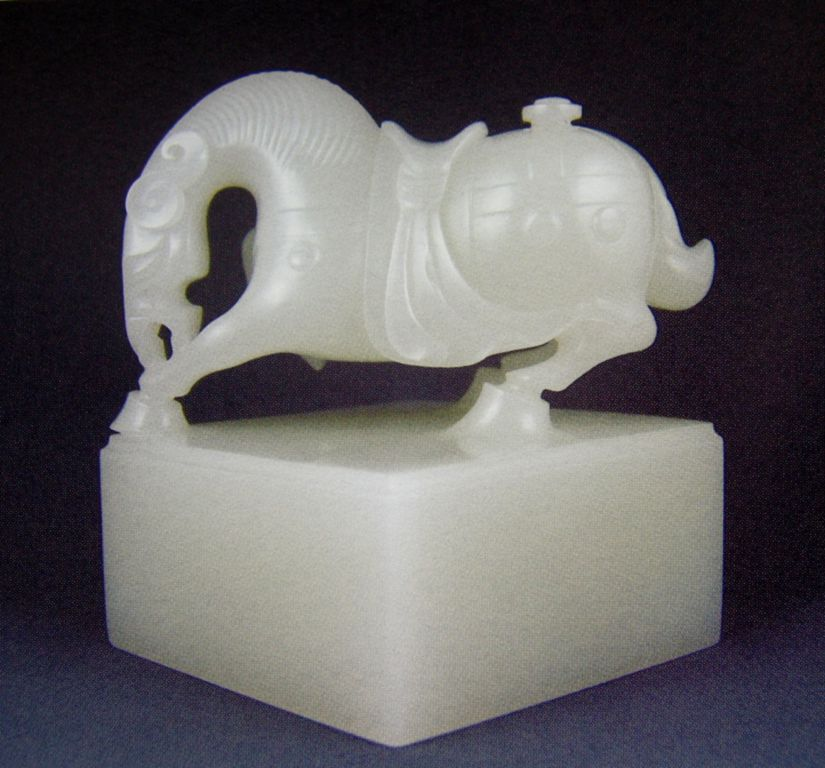 图3-3-2 白玉 唐马 （神工奖创意金奖）杨曦设计制作
图3-3-3 籽玉 花猫 张景田设计制作
 图3-3-4 青金石 玉龙 杨子锐设计制作 图3-3-4 青金石 玉龙 杨子锐设计制作四、瑞兽玉器工艺过程 瑞兽玉器的制作是设计的继续和完善，从表面的图形和立体的琢磨其间有着很多的差异需要调整，而瑞兽的整体造型和具体的纹饰勾画要始终伴随着全部的制作过程。 1.块体出坯（俗称：细砂岀坯） 大体出坯是玉器制作的第一阶段，首先使用斩砣岀坯瑞兽轮廓，从大块面到小块面斩切、出坯。 斩砣岀坯一般是直线块面法，这是由斩砣的锯片造型所决定的，同时也符合造型的基本规律。瑞兽岀坯时要整体入手，不要被次要、细小的形象所束缚，要大胆、明确地斩出大体（几何）造型，其中包括作品的重心、动态、趋势等，然后再用小斩砣进行逐渐的局部出坯和深层的斩挖，使瑞兽的头部、身体、四肢的造型、位置、姿态以及相互之间的关系得到肯定。出坯所展现的全部是大大小小的块体造型，同时为后期琢磨留有一定余地。 瑞兽岀坯通常能斩出大体的轮廓，呈现出大小的块面，包括头的方向，身体的扭动，四肢的位置和动态，没有细节部分。 斩砣出坯通常有直斩、斜斩、排斩等（行话称斩、削、标、扣、挖）。排斩通常要斩出凹的造型，先用斩砣排列斩数刀，然后用撬刀把凹部的玉料逐一撬去。斩砣是片状的，又飞速旋转。由于斩切玉料不可能一下子斩下，玉料往往需要进退多次，因而，在重复使用斩砣的时候一定要保持原来的角度，否则玉料容易被飞转的斩砣甩出。初学者对斩砣的使用一定要胆大心细、注意安全。 斩砣出坯可体现出琢玉水平的高低，其表现在两个方面：其一是造型能力，通过斩砣出坯，玉器的基本造型和具体形象的部位已基本确定，不可改变。其二是斩工到位，高明的琢玉师不但能斩出玉器的大体造型，而且也能用斩砣概括地斩出形象的局部，这样后道工序更为省力，大大提高了工效。斩砣大体出坯是琢玉的第一阶段，也是关键的阶段，它直接关系到玉器造型的质量。治玉者不仅要表现出对玉器立体造型的胸有成竹，而且要具备稳健、大胆、正确、熟练的工艺技巧。 2.形体粗磨（俗称：粗砂岀坯） 瑞兽斩砣出坯后虽然可以看出作品的大体造型，但玉料上到处都是棱角，带有斩砣的痕迹，而且细节部分的空透、深凹等处，都是斩砣所不能涉及的，为了使瑞兽整体造型和具体形体得到全面肯定，这就需要根据不同的形体，采用压砣、杠棒、扎砣等工具并加以粗砂（新的钻石粉工具）来对瑞兽玉器造型实施全部的碾磨和调整，使具体形象得到进一步的明确和细化，把多余的玉料磨去，为最后的精工细作打下了基础。 形体粗磨之关键在于作者对瑞兽的整体造型和个细节的形体、结构以及它们之间的联系有一个充分的了解，能以不同的琢磨工具去表达相应的具体形象。 瑞兽粗磨还是要整体入手，磨出从头的颈部至尾部一条优美、流畅、力度的主线，再逐一在粗磨出饱满的额头，凸显的眉骨，圆突的眼珠，圆润的宽鼻，微张露牙的大嘴，以及四肢的动态。 3.精雕细琢（俗称：细砂了手） 在琢玉工艺中精雕细琢俗称“细砂了手”，是琢玉工艺的最后阶段。虽然所使用的工具和琢磨粗坯的工具是一样的，但在用砂上非常细腻（旧的钻石粉工具），工艺技巧更加到位，使整个玉器作品中的各个部分都趋于细致完美。 “细砂了手”是细活。琢磨要根据瑞兽不同的部位选择合适的砣轮，仔细琢磨出相应的造型，特别对瑞兽的眼、鼻、口等重点部分的刻画更是细致入微、丝丝入扣，同时对结构部分的雕琢运砣肯定，刀迹清爽，线感优美，同时表现出娴熟的运砣刀法，要使瑞兽玉器在艺术造型上气韵饱满，在视觉感受上有精美、浑然、灵动之感。 4.打磨、抛光 打磨和抛光在现代琢玉中通常不是由琢玉者来完成的，而是由专业抛光人员来实施的。 ① 打磨 打磨是玉器抛光的一种方法，通常对白玉的抛光称为打磨，打磨后的光泽赋柔和、优雅的气质。 打磨所使用的材料主要是细腻的油石，把它切割成不同形状的条状，在玉器相应的地方进行擦磨，以至使玉器表面细腻、润滑，呈现出玉的丽质和温润。 ② 抛光 抛光一般有三道工艺： 其一：细砂水磨，俗称“去糙”。首先用极细的金刚砂泡在水碗中，再用厚的毛竹片制不同的抛砣或用胶碾（用虫胶、火漆制成的抛砣），然后用手粘上水砂放在抛砣上对玉器进行抛磨，使玉器表面全部达到微微发亮的程度。由于细金刚砂对玉器的抛磨存有一定的磨损，因此这道工艺有着很高的要求，既要去掉糙面，使表面光滑细腻，又不能损伤雕琢的造型、纹饰，不“走形”，保持玉器原作的造型和气韵。 细砂水磨是抛光的关键工序，它直接关系抛光的质量，因此要顺形而磨、磨面柔顺、光地平顺，最后还要把玉器洗净，不留砂粒，方可进入下道工序。 其二：抛亮，因为使用的砣轮是用皮做的，所以也称“上皮砣”。皮砣粘着和水的抛光粉旋转打磨，当其有些发烫时，玉器就渐渐明亮起来。这样不断地打磨，至玉器全部光亮，然后将其清洗干净，进入抛光的最后阶段。 其三：上腊，由于抛光的工具是圆轮状的，有些地方是抛不到的，所以就要用上腊来解决整体的亮度问题。首先把玉器放在水锅中，用炉烧，但一定要从冷水烧起，渐渐加热，以免温差太大而引起玉器开裂甚至断裂。 烧热后把玉器取出，放在一张铁丝网上，下面用炉烘，保持温度（现代使用烘箱加热）。然后将石蜡粉末均匀的洒在玉器上，此时，石蜡粉末会自然融化，渗透到玉器的各个部分。接着用刷子刷，使石蜡分布均匀。最后用干毛巾擦，直至光泽柔和，抛光才算完工，玉质之美才能得到充分的体现。 打磨和抛光同样需要一定的造型能力，在对玉器进行打磨时不但不能损伤原有的造型，而且，高超的抛光、打磨师能够对雕琢中出现的“败笔”进行修正，给玉器增添光彩。 瑞兽玉器工艺过程案例：（图3-4-1至图3-4-14） 图3-4-1 老虎石原料，因料设计
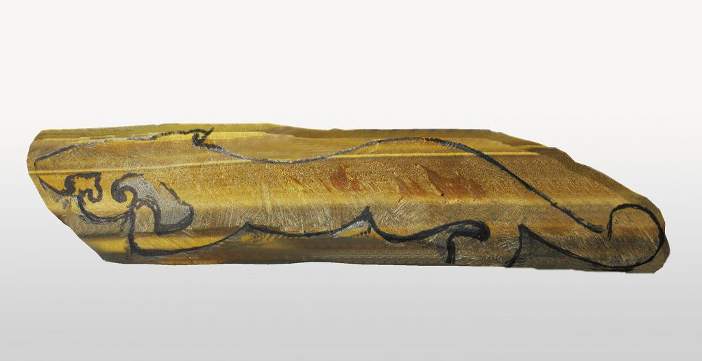图3-4-2 依势造型，老虎造型勾画
图3-4-3 斩砣岀坯
图3-4-4 斩砣岀坯效果
图3-4-5 形体粗磨效果1
图3-4-6 形体粗磨效果2
图3-4-7 精雕细琢1
图3-4-8 精雕细琢2
图3-4-9 240号油石打磨
图3-4-10 400号油石打磨
图3-4-11 800号油石打磨
图3-4-12 牛皮抛光
图3-4-13 轮刷抛光
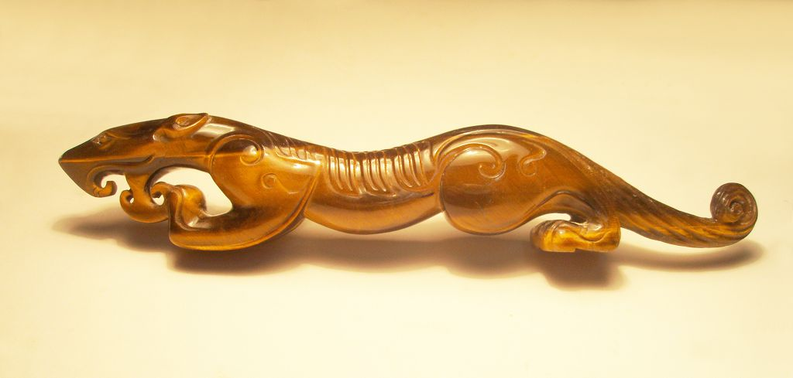 图3-4-14 抛光后效果 吴非澴设计制作
西汉 圆雕玉虎
实训项目和思考练习： 1.设计、制作瑞兽玉器1件。 2.阅览、临摹古代瑞兽图案。 3.阅览、临摹现代动物图案。
第四章 化去腐朽显神奇——花鸟玉器工艺 在玉器琢磨中，治玉者在很大程度要进行“化腐朽为神奇”这方面的思考，因为真正完美无瑕的玉是非常少的，而大部分的玉料都存有瑕疵，如杂质、色斑、裂纹、“棉绺”等，通过作者的奇思妙琢，不仅使观赏者对瑕疵“视而不见”，还要使玉器作品产生意想不到的艺术效果，本章通过花鸟玉器工艺来揭示“化腐朽为神奇”的琢磨方法。 学习目标： 1.掌握花鸟玉器的因料设计：去裂藏裂、变瑕为瑜 2.了解花鸟玉器的形式美感 3.熟悉花鸟玉器的工艺要求 4.掌握花鸟玉器的琢磨工艺 教学要求： 通过本章花鸟玉器的案例分析和花鸟玉器的琢磨实训，使学员能理解、掌握“去裂藏裂、変瑕为瑜”的设计方法；能掌握花鸟玉器的造型特点；能熟悉花鸟玉器的工艺要求；能进一步掌握玉器的圆雕、浮雕、透雕、线刻、等工艺技巧以及不同工具的使用方法；同时进一步加深对民族图案和民族文化的理解，以及设计和创新意识的培养。 实践项目： 花鸟玉器设计和制作
一、花鸟玉器因料设计 在第三章“依势造型、俏色巧作”的基础上，设计将进一步深化，通过花鸟玉器的工艺琢磨引申出“去裂藏裂、变瑕为瑜、”的琢玉方法。 1.玉料的察看、分析、判断 玉料分析始终是玉器设计前提，每一次察看、分析、判断玉料的实践，是“相玉”经验的积累。 2.去裂藏裂 裂纹是玉料中最为常见的毛病。横向的裂纹比较浅，在雕琢时容易去掉；而纵向的裂纹比较深，不易去掉。因此，去裂、借裂、藏裂是琢玉常思考的问题而又费神的问题。 裂纹是琢玉的不利因素，在琢磨中要加以重视和利用。如果构思由此而起，砣轮顺裂而下，裂纹完全可以成为形象之间的分割线和形象的边缘线，运用得好，也许料形将更显俊俏，成为玉器琢磨中特殊的表现语言。 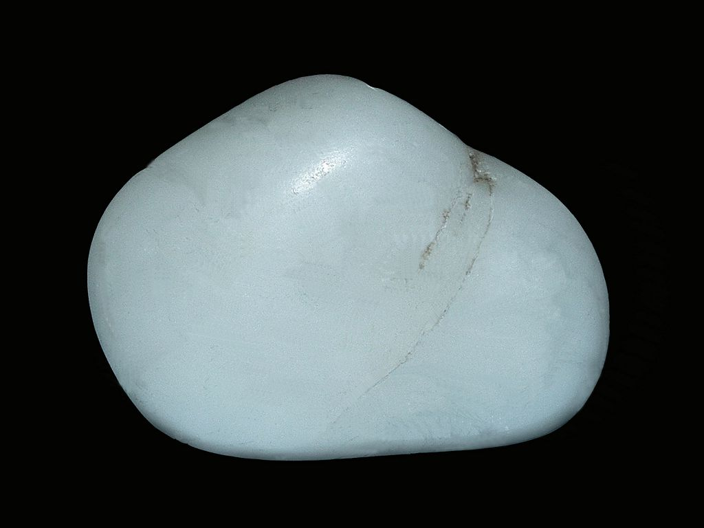图4-1-1 籽玉原料
图4-1-2 籽玉 富贵图 赵丕成设计制作
玉石中的瑕疵是自然形成的，而且变化异常，治玉要因势利导，巧妙经营，使自然的玉料得到顺其自然的琢磨，化不利因素为有利因素。 花鸟玉器设计题材广泛，形式千变万化，我们还是要根据自己手中的玉料因料设计，因材施艺，选择最为合适的题材和形式赋予玉料之中。 3.变瑕为瑜 玉器琢磨要使玉质在最大程度上体现出它的美感，应在基本不影响料体块度的前提下去掉瑕疵，使玉料纯净。而有些瑕疵是深层的，不易看见，无法去尽，这就需要在琢玉中加以随机应变，合理调整，巧妙变通。也许小黑斑可以成为太湖石的虚空或河水的漩涡；而零星的黑点加以连线，不就成了灵动的流水、流云、蔓藤等，这完全是有可能的。琢磨方法取决于作者对玉的理解，以及和所要表达的意蕴相吻合。 如：玉作秋荷月影，原本是一枚不被看好的籽玉（图4-1-3），料体上原是包裹着厚厚的灰色和黑斑，由于在其设计上进行了大胆、巧妙的构思，将白灰玉色雕琢成了一轮圆月，似流云飘绕，月色朦胧；而圣洁莹透的莲花脱尽了“污泥浊水”，亭亭玉立，一尘不染；再将籽料斑驳的大片铁锈红皮色雕琢成荷叶，寓意秋意正浓。秋荷月影玉作用“变瑕为瑜”的设计方法，将有碍为有利，变累赘为妙着，化腐朽为神奇巧。秋荷月影玉作在奇思妙琢中诞生出“清水出芙蓉”的圣洁、温润和美丽（图4-1-4）。  图4-1-3 籽玉原料 图4-1-3 籽玉原料图4-1-4 籽玉 秋荷月影 赵丕成设计制作
二、花鸟玉器形式美感 花鸟玉器在琢磨过程中由于造型的需求和不同工具的使用，出现了线、面、体的语言，它们虽然是一个有机的整体，但也各自表现出特有的形式美，因此对琢磨也有着不同的相对应的要求。 1.线之有形有情 线的语言在花鸟玉器上的表现非常重要，所展现的线形砣痕、刀法也是多样的。一般用压砣表现树根线形的古拙和劲健，用扎（钉）砣表现花蕾、花瓣、叶片线形的圆润和力度；用勾砣去表现出植物细藤、叶脉和禽鸟鸟羽毛的丝丝游动、细腻娟秀。有“形”有“情”的琢玉线条既能表现形象的造型，亦能表现出不同对象的凝重、优雅和飘逸，这全凭琢玉者手腕运行的轻重缓急，以及精炼、清晰、流畅的线形运用。 ① 线形化、装饰性 玉器虽然是立体的，但是，在形体雕琢时完全用线形来塑造的。线可使造型、纹饰显得生动、清晰并富有装饰性。线形首先表现为花鸟玉器的外轮廓线，器型的稳健、优雅和动势，一定和连续、优美的线形有关。若是具体的形象，则更有着劲健或柔和、粗短或修长、生动而多变的线纹。线要求流转、通脱，每一根线条的来龙去脉都要交待清楚，不能有突然的起头和结束，这些尽在运砣的深浅、转折、进退的掌控之中。 ② 线脚清晰精到 一件花鸟玉器的工艺到位与否在很大程度上是要看线脚是否清晰，死角是否理清。线脚是根据不同形象而随形沿走的，有时深琢有时浅淌，有的修长，有的短促。虽属细微末节，施艺也要面面俱到，因为它正是鉴别玉器做工的看点之一。 2.面之光挺柔顺 花鸟玉器中有很多形态的面，有光素的抛面、板直的平面、转折的棱面，琢磨时运砣平稳，磨面便能光挺柔顺，不留砣痕。圆转起伏、陡峭挺拔、大小各异的表面，要求施艺过程爽快肯定、干净利索。 3.体之浑然圆润 “圆润”是玉器之温润美。这不仅是由材料决定的，还与圆型的工具有关。一般应避免折角、锐角，即使是方的形器也要方中带圆。切记，玉形处于“浑然圆润”的状态时，能够最大程度体现出玉性的美感。而玉器是由大大小小的线体、面体组成的，因此，琢磨时要保持玉的饱满度，过于纤细、锐利、透薄的雕琢都会使玉质失去圆润感或变得“枯萎”。因此，无论是琢磨大的形体还是小的形体，都要保持玉形的浑厚、饱满、圆润，从而体现玉质的温润、莹透、浑然之美。 以上线、面、体的琢玉造型语言，在花鸟玉器上，得到了广泛的运用，使不同的花鸟形式有着完美和贴切的表现（图4-2-1至图4-2-11）。  图4-2-1 商代晚期 玉燕 图4-2-1 商代晚期 玉燕 图4-2-2 唐代 白玉花卉纹梳子背 图4-2-2 唐代 白玉花卉纹梳子背图4-2-3 金代 白玉雕鹘捉鹅图
 图4-2-4 元代 龟鹤纹饰 图4-2-4 元代 龟鹤纹饰 图4-2-5 宋代 莲花玉佩 图4-2-5 宋代 莲花玉佩 图4-2-6 明代 白玉雕 亭亭玉立佩 图4-2-6 明代 白玉雕 亭亭玉立佩 图4-2-7 清代 翡翠 白菜 图4-2-7 清代 翡翠 白菜图4-2-8 清代 玉凤
 图4-2-9 近代 白玉白菜 图4-2-9 近代 白玉白菜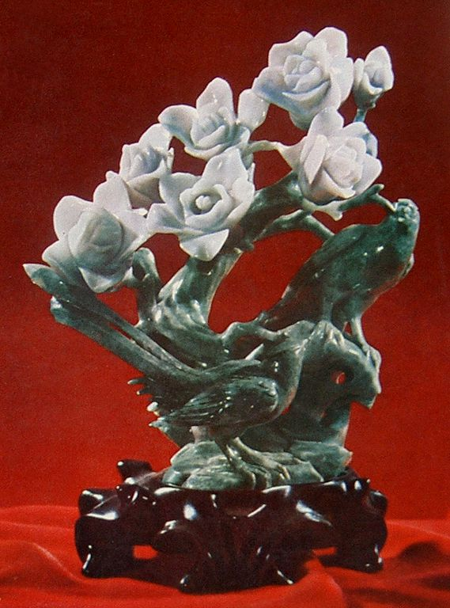图4-2-10 独山玉 玉兰双鸟 上海玉雕厂设计制作
图4-2-11 玛瑙 冠上加官 作者：韩荣昌
三、花鸟玉器工艺要求 琢玉的工艺技巧虽然在不同的题材和形式中其琢磨方法基本相似，但是在具体的样式中有着独特的表现和要求。 1.走——贴切挺顺 压砣和扎砣“走”砣的运用一般是在花鸟形象的外延或者较浅的位置。“走”出花鸟的形态；“走”出花鸟的线感；“走” 出柔和的抛面和挺括的棱面等，一切在贴切挺顺之中运行。 2.压——平整顺畅 “压”出羽毛的层次；“压”出花瓣的柔美；“压”出藤蔓的力感。“压”的砣痕虽然有高低起伏、迂回转折，然而，平整顺畅是运砣的要求。 3.淌——匀净柔和 压砣、蛋形砣在叶片、羽毛等边缘随形轻轻地“淌”过，留下了浅浅的弧面给玉器造型增添了优雅的气质和特有的韵味。 4.扎——遒劲有力 “扎”的砣痕在花瓣间、在羽毛间、在形象间，线感强劲，富有弹性。在玉器造型中有较强的表现力。 “勾”的砣痕细腻、流畅，如须毛、叶脉、纹饰等，是玉器琢磨的提神之笔。 琢玉技巧的精湛和优美，是在不断的实践中逐渐提高的，我们要在琢玉中去细细体会不同的琢玉刀法、把握运砣的方法，给花鸟玉器增添特有的琢玉美感。在下列花鸟玉图中去细细品味其中的技巧和刀法（图4-3-1至图4-3-8）。 图4-3-1 白玉 安居乐业 （神工奖最佳工艺奖） 赵显志设计制作
 图4-3-2 玉佩 志在千里 作者：赵显志 图4-3-2 玉佩 志在千里 作者：赵显志 图4-3-3 白玉 恩爱相依 作者：吴灶发 图4-3-3 白玉 恩爱相依 作者：吴灶发图4-3-4 白玉 极目寰宇 作者：刘国皓
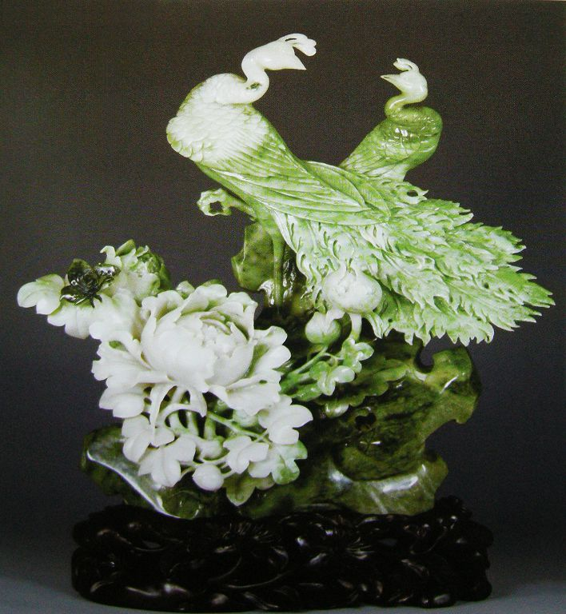图4-3-5 独山玉 国色天香（第四届“陆子冈杯”玉雕精品展优秀作品奖） 作者：刘晓强
 图4-3-6 籽玉 荷塘清趣 赵丕成设计制作 图4-3-6 籽玉 荷塘清趣 赵丕成设计制作 图4-3-7 籽玉 冰清寒香 赵丕成设计制作 图4-3-7 籽玉 冰清寒香 赵丕成设计制作 图4-3-8 籽玉 玉凤 赵丕成设计制作 图4-3-8 籽玉 玉凤 赵丕成设计制作花鸟玉器的工艺流程和瑞兽玉器的工艺流程基本相似，再次重复玉器琢磨过程将会更加熟悉和全面掌握玉器工艺制作步骤，提高制作技能。 案例1.花型玉器制作过程 ① 勾线画稿 根据玛瑙的造型和花形的姿态立体的把图形画在材料上（图4-4-1）。 图4-4-1 勾线画稿
② 块体出坯 使用斩砣块面的斩出花的造型（图4-4-2）。  图4-4-2 细砂出坯（斩砣出坯） 图4-4-2 细砂出坯（斩砣出坯）③ 对照画稿 尽可能从大的块面到小块面，完整的斩出花的造型和姿态（图4-4-3）。 图4-4-3 细砂出坯（斩砣出坯）
④ 形体粗磨 使用不同的工具磨去块面的棱角，琢磨出花的整体造型和姿态（图4-4-4）。 图4-4-4 粗砂磨坯
⑤ 精雕细琢 使用不同的工具仔细、精心的琢磨，使花瓣表面光挺、细腻，并且雕琢出花瓣边缘的转折以及各细部的变化（图4-4-5）。 图4-4-5 细砂了手（精工细琢）
案例2.玉凤醉舞制作过程 这件凤鸟玉器的出坯基本上不用斩砣工具，可直接用压砣、扎眼、杠棒等工具进行大体磨出凤鸟的造型。 ① 整体凤鸟的构图画好以后，从头开始雕琢（图4-4-6）。  图4-4-6 图4-4-6② 头部基本确定，雕琢逐渐延伸到身体和翅膀部分（图4-4-7）。  图4-4-7 图4-4-7③ 左翅膀基本确定（图4-4-8）。  图4-4-8 图4-4-8④ 右翅膀裂痕去掉，位置确定，层次拉开（图4-4-9）。 图4-4-9
⑤ 右翅膀进一步深化，层次感加强，腿脚、尾羽位置确定（图4-4-10）。  图4-4-10 图4-4-10⑥ 腿脚、尾羽进一步深化，立体感表现（图4-4-11）。  图4-4-11 图4-4-11⑦ 右翅膀细化，整体细化描写，玉凤基本完成（图4-4-12）。 图4-4-12
⑧ 头部下瑕疵雕空，并打磨完工(图4-4-13)。 图4-4-13 籽玉 玉凤醉舞（正面） 赵丕成设计制作
⑨ 背面尾羽的巧色利用，形态简洁，线条流畅(图4-3-14)。 在整体的雕琢中，努力表现出玉凤醉意正浓、慢步起舞的姿态， 其中包括色泽的巧妙利用，线面的经营安排，动态的飘然优雅，达到造型整体浑然，凤鸟气韵生动的艺术效果。 图4-4-14图 玉凤醉舞（反面）
案例3.玉凤墨牡丹制作过程 ① 去瑕疵 整料形 图4-4-15 这是一枚黑白相间的玉料，首先使用斩砣去掉不好的部分，再进行构思…… 图4-4-15
② 勾线画稿 图4-4-16 把白色部分画成凤鸟，黑色部分打算雕琢成墨色牡丹。  图4-4-16 图4-4-16③ 形体粗磨 图4-4-17在这件玉作的岀坯上斩砣用的不多，而大部分用的是压砣、扎眼、杠棒等工具进行凤鸟和牡丹的大体岀坯和形体粗磨。  图4-4-17 图4-4-17④ 精雕细琢 图4-4-18 根据凤鸟和牡丹的造型进行细化，凤鸟形体简洁，线条灵动；牡丹形态含苞欲放，雍容华贵，二者分和得体。 图4-4-18
⑤ 打磨效果  图4-4-19 洁白凤鸟，墨色牡丹，通体光泽细腻柔和，手感温润 图4-4-19 洁白凤鸟，墨色牡丹，通体光泽细腻柔和，手感温润⑥ 背面造型  图4-4-20 背面线形的简练造型同样富有美感。 图4-4-20 背面线形的简练造型同样富有美感。
实训项目和思考练习： 1.设计、制作花鸟玉器1件。 2.阅览、临摹白描工笔花鸟画。 3.阅览、临摹花鸟吉祥图案。
第五章 佛仙玉女石间出——人物玉器工艺
玉器的因料设计主要通过依势造型、俏色巧作、借裂藏裂、変瑕为瑜等琢磨手法来达到理想的造型效果，使玉形、人意、雕工达到自然的统一。本章的人物玉器琢磨同样要运用到因料设计的各种方法，设计琢磨出多姿多彩的人物形象。 学习目标： 1. 掌握人物玉器的因料设计方法 2. 了解佛仙仕女的造型特点 3. 熟悉玉人造型的审美要求 4. 知道形式美的造型规律 5. 掌握人物玉器的工艺过程 教学要求：通过本章人物玉器工艺的实训课程，使学员能进一步理解和掌握因料设计的不同方法，用创新的意识设计不同的人物玉器；能掌握人物玉器的造型特点；能理解、运用形式美的规律；进一步提高琢玉技艺，能较熟练掌握玉器的圆雕、浮雕、透雕、线刻、等工艺技巧。 实践项目：人物玉器设计和制作
一、人物玉器的因料设计 在人物玉器的设计案例中，同样有着因料设计，因材施艺的多种方法，我们通过下列人物玉器设计，重温了第三、四章的琢玉设计方法，同样的设计方法，可以琢磨出不同的题材和多样的造型。 1.依势造型 例1：图5-1-1珊瑚原料，一眼看去，珊瑚枝的造型具有动感，构思随想而出，粗枝主体部分雕琢扑蝶的仕女，一波三折的珊瑚巧作花枝横斜，整体造型随着珊瑚枝的形态而随形雕琢，人物动态自然优美，工艺细腻精湛（图5-1-2）。 图5-1-1 珊瑚原料
图5-1-2 珊瑚 扑蝶 设计：郑一辉 制作：郑一辉 魏忠仁
例2：图5-1-3籽玉原料，静观这枚籽玉，隐约可见玉女的倩影，依势地剥离，细心的雕琢，玉女脱石而出。简洁优雅的线形，构成了温润含蓄的玉体，飘动的衣纹，流淌的水波，全在一线之中带出。然而，籽玉皮质依然，玉女还是原石，造型在写实和抽象之中变化，构思融入了传统和现代的元素（图5-1-4）。 图5-1-3 籽玉原料
 图5-1-4 籽玉 芙蓉出水 赵丕成设计制作 图5-1-4 籽玉 芙蓉出水 赵丕成设计制作以上两款人物造型，采用了同样的“依势造型”方法，然而由于玉料的不同，塑造了一静一动，一简一繁两款截然不同的造型风格。
2.俏色巧作 例 ① 图5-1-5，白玉的枣红皮色，在此得到了巧妙的利用：圆睁的双目，扩张的鼻孔，横飘的胡须，充分刻画出钟馗的无畏和霸气；飘逸的祥云中又有两只蝙蝠飞出，枣红皮色在白色的衬托下生动的表现出钟馗纳福的意韵。  图5-1-5 白玉 钟馗纳福 （神工奖银奖）林强设计制作 图5-1-5 白玉 钟馗纳福 （神工奖银奖）林强设计制作例 ② 图5-1-6，冰清的弯月，南飞的大雁，远去的帆影，飘落的红叶，还有远山烟云飘绕，又有一只白色的小鸟飞来，似乎聆听着琵琶女弄弦诉情，巧色运用深化了玉作琵琶行的意境，巧色雕琢成了情感的表达、凝固的诗情。 图5-1-6 玛瑙 琵琶行 赵丕成设计制作
俏色在玉雕中有很好的表现力，玉料中的巧色有的在表面、有的在深层，不同的玉料俏色的分布是千变万化的，俏色巧作贵在巧妙利用、随机把握。 3.借裂藏裂 图5-1-7籽玉原料，原来的玉料有着较多的裂痕，如头部、肩部、腿部都有深浅不一的裂痕，通过设计和制作，琢去裂痕，深藏裂痕，人物的造型随着裂痕而琢出（图5-1-8）。 图5-1-7 籽玉原料
图5-1-8 籽玉 浴日 赵丕成设计制作
还有 （图5-1-9白玉原料），三处有深深的“伤痕”，通过巧妙的琢磨，倩影显出。裂痕是琢玉之中的常见病，琢磨就是通过一定的造型把裂痕去净或深藏，达到美玉无瑕的理想效果（图5-1-10）。  图5-1-9 白玉原料 图5-1-9 白玉原料 图5-1-10 白玉 背影 赵丕成设计制作 图5-1-10 白玉 背影 赵丕成设计制作4.変瑕为瑜 由于材料的不同和瑕疵的多变，変瑕为瑜的琢玉手法也随之多样，如：琢玉艺术家潘秉衡先生在雕琢一件玉器人物时，当出坯到仕女头部时，脸的一侧出现了深色纹理，洁净的脸面有了“脏色”。于是他在仕女脸的一侧构想、雕琢了一面扇子，“脏色”成了扇面上的纹饰，刻画了仕女执扇半遮面的神态。这一“变瑕为瑜”手法不仅解决了琢玉中的不利因素，而且形象生动地表现了古代女性恬静和含蓄之美。 玉器的因料设计方法是多样的，以上是玉器设计中比较典型的例子，这些方法有时又是混合在一起的，因此，设计要统筹兼顾，因此，玉器琢磨形成了随形构思，随色赋意，因裂而雕，为瑜而琢的施艺方法。但是，这一方法的完美体现还要依靠相应的造型能力和审美能力，玉器才有完美的造型、温润的质感和美好的意蕴。
二、佛仙仕女的造型特点 1.玉观音 佛教玉器主要有释迦佛、弥勒佛、观音菩萨、罗汉等，其中观世音菩萨是人们虽为熟悉的、亲切地、完美的造像。有东方维纳斯的美誉。她眼睛微闭，静观自在，在慈祥的微笑中还带有一丝神秘之感，体现了佛教慈祥的教义和佛法无边的渗透力。 玉观音的造型特点：脸相丰满圆润，比佛略长些，长眉秀目（秀眉凤眼），体态丰腴秀美，服饰华丽庄严，头戴宝冠、腰束长裙、肩挂披帛，左臂自然下垂，手掂净水瓶，右臂向上弯依胸，持佛尘或莲花，除了身体比例适度以外，必须注意的是动态变化微妙，以略微扭动身躯和略斜头部，构成优美的外轮廓曲线，既含蓄端庄，又灵动优雅，显出衣裙飘拂，静态中有微动之势，犹如徐徐升騰的青烟（图5-2-1至图5-2-4）。  图5-2-1 水晶 提蓝观音 作者：刘忠荣 图5-2-1 水晶 提蓝观音 作者：刘忠荣 图5-2-2 白玉 观音 作者：于泾 图5-2-2 白玉 观音 作者：于泾 图5-2-3 白玉 佛光如意观音 （天工奖优秀作品奖）作者：万伟 图5-2-3 白玉 佛光如意观音 （天工奖优秀作品奖）作者：万伟 图5-2-4 金星 观音菩萨 张雷设计制作 图5-2-4 金星 观音菩萨 张雷设计制作2.古代仕女 仕女整体造型要领： ① 体态神韵：恬静娴雅，婀娜多姿，略带娇美，有飘逸之感 ② 形体要点：颈项犹动略修长，秀骨圆润肩胛削，杨柳腰肢显灵动，臀部丰腴需含蓄。 ③ 面相造型：鹅蛋脸或称瓜子脸，柳叶眉、丹凤眼、悬胆鼻、樱桃嘴，眉毛弯弯，嘴角翘。 ④ 手部造型：仕女之手应作藕型，十指尖尖似春笋，刻画是要达到细、檽、柔、软。手势有：兰花形、佛手形、荷叶形、剑手形等。 ⑤ 衣纹造型：布衣纹要随着人物的形体起伏、结构动态而雕琢，贴身处，要有人体肌肤的弹性感；虚灵处，要有衣褶的飘逸感，使衣裳、风带走势飘动（图5-2-5、图5-2-6、图5-2-7）。  图5-2-5 清代 绿松石人物 图5-2-5 清代 绿松石人物 图5-2-6 白玉 麻姑献寿（神工奖金奖）上海雅园艺术品有限公司设计制作 图5-2-6 白玉 麻姑献寿（神工奖金奖）上海雅园艺术品有限公司设计制作 图5-2-7 岫岩玉 英姿 赵丕成设计制作 图5-2-7 岫岩玉 英姿 赵丕成设计制作3.现代玉女 现代玉女的造型一般比较整体，体态饱满，带有一定的抽象性，充分表现出形体的柔美和玉质的温润。在雕琢手法上细腻而不空灵，整体而有韵味，有的只是在原石的基础上简练的雕琢出简练、流畅的衣纹，然而，玉女优雅起伏的形体随之而出（图5-2-8）。 图5-2-8 白玉 女人与猫 作者：吴德昇
三、玉人造型的审美要求 1.人物需传神 物一般从头部开始琢磨，以此为标准渐渐推移至全身，头部要根据不同的人物性格定出五官位置，脸部特征。在不大的体积中要具体刻画出人物的神态表情，如慈祥、可爱、俊俏、英武、洒脱等，因此，采用简练概括、适当夸张的雕刻手法，使人物形似传神。女性脸型光洁、细腻、圆润，男性脸型适当留有小的块面、刀迹，刻画出阳刚之气。 身体部分依次刻画出人物的颈项、肩臂、胸背、臀位以及肌肉、结构等。尤其是手势的雕琢一定要仔细到位，符合人物的性格特征。手势的表情仅次于脸的表情，其为传递人物的神态起着重要的作用。 2.局部需整合 在人物玉器的雕琢过程中，要有局部雕刻和整体观察的意识，把握好局部和局部之间的关联，具体形象和整体作品之间的关联，正面和则面以及背面的关系，一一多要考虑周全，因为琢磨使每一个个体形态多在相应地缩小、变薄、变细，特别是镂空雕，形象之间往往容易造成脱节，因此作为初学者要以此为戒，形态安排要紧凑合理，使形象之间的交搭贴切、自然、生动。 3.衣纹添神韵 玉器人物的造型在很大的程度上在勾画和表现衣纹，衣纹的雕饰既要有程式化的表现，又要有个性化的思考，琢磨出衣纹的虚实关系，人体的结构关系。实处衣着贴身，随人物的结构起伏圆转；虚处衣褶虚灵飘逸，表现出衣纹的静动、聚散的丰富变化。 在人物衣纹的雕琢中要表现出不同的质感，薄质衣纹紧贴肌肤，表现出人体曲线之美，同时衣纹有飘逸灵动、轻盈柔和之感；厚质衣褶琢磨浑厚圆润，饱满豪放，给人物形象增添了沉稳劲健的风格。衣纹千变万化、丰富多彩，精湛、贴切的衣纹表现直接提升着人物形象的神韵。 4.运砣显刀法 精雕细刻作为琢磨的后道工序，是仔细入微，体现质感，展现琢玉刀法之美的工序。人物的脸部，琢磨运砣刀迹细致明快、干净利索、形态清晰；玉体光素之处琢磨圆润饱满、简洁流畅、细腻糥滑；衣纹的运砣走势可直推、后拉、有时也可横斜运行，充分表现出砣痕刀迹的各种韵味。在精雕细琢中，运砣要力度得当，既要掌握好行砣的推力又要控制住好止刀的收力，运砣进退自如，不能滑刀，以防伤及临近形体。运砣可在实践中细细体会，这是琢玉的特殊表现语言。 玉器人物的造型美感包含着多项的审美要求，主要有人物形体的美感，个性神态的生动，整体局部的和谐，衣纹质感的表现，精美雕琢的技巧等，在人物雕琢中整体的把握着这些造型的要求，使人物玉器具有造型美、雕琢美和意蕴美（图5-3-1至图5-3-14）。  图5-3-1 石家河文化 玉人兽复合式佩 图5-3-1 石家河文化 玉人兽复合式佩 图5-3-2 战国晚期 双舞人佩 图5-3-2 战国晚期 双舞人佩图5-3-3 西汉早期 舞人玉佩
图5-3-4 清代 珊瑚 仕女
 图5-3-5 近代 糖白玉俏色放风筝仕女 图5-3-5 近代 糖白玉俏色放风筝仕女 图5-3-6 岫岩玉 桔颂 赵丕成设计制作 图5-3-6 岫岩玉 桔颂 赵丕成设计制作图5-3-7 碧玉 钟馗夜行 作者：吴德昇
 图5-3-8 翡翠 如意自在观音（天工奖银奖） 作者：颜桂明 图5-3-8 翡翠 如意自在观音（天工奖银奖） 作者：颜桂明 图5-3-9 白玉 富贵当头（神工奖银奖） 崔磊设计制作 图5-3-9 白玉 富贵当头（神工奖银奖） 崔磊设计制作图5-3-10 白玉 财神（神工奖金奖） 于雪涛设计制作
 图5-3-11 白玉 静思（神工奖金奖） 杨曦设计制作 图5-3-11 白玉 静思（神工奖金奖） 杨曦设计制作图5-3-12 玛瑙 醉罗汉 王敏设计制作
图5-3-13 白玉 童子如意 张景天设计制作
图5-3-14 和田黄玉 弥勒 侯晓锋设计制作
四、形式美的造型规律 随着人物玉器设计过程的深入，在造型上要考虑人物的神态、衣纹的动感、合适的配景等问题，其间有形式美的规律需要安排和经营，使人物造型达到气韵生动的效果。 1.构图与章法 整体的构图与章法是构成玉器总的大气韵、大趋势、大效果以及姿态和表情。其在玉器设计中是非常讲究的，它以精炼的语言、饱满的气韵来表达美的形式，主要表现有以下几个方面。 ① 经营位置 指的是图中形象的大小、主次、远近、上下、左右等位置的摆放。要精心推敲、统筹规划、合理布局。 ② 呼应意连 图形中每一个具体形象都不是孤立的，它和其它形象以及整个构图都有着密切的联系。因此无论人物还是动物、植物等，它们的动作、姿态都要形成互相呼应的关系，融会一体。 ③ 虚实处理 虚和实是造型艺术中两大精神元素，它们相互依存、相互衬托。在中国的造型艺术上虚和实的处理尤为重要。玉器上的“虚”表现为虚空、凹陷，也表现为不加雕琢，素面一片，它是“实”的依托，更是“实”之灵气的往来之地。而玉器上的“实”则表现为凸起的充实形体，我们在雕琢实体时，虚体也油然而生。因此，塑造实体也就是在塑造虚体，虚体的形式同实体的形式一样重要。虚实相宜的安排形成玉器造型的一藏一露、一疏一密、一静一动的形式美感。 ④ 节奏韵律 节奏和韵律实际上是一种对比美统一于和谐美的旋律之中，在对比的重复和交替的元素中求得连贯的、匀称的美。节奏和韵律在诗歌、音乐、绘画、雕刻等方面是共同的美感语言和审美经验。它在玉器上表现为形体、线条的对比与统一，虚实、方圆、曲直、粗细、刚柔、静动之线形，经过周密的安排，使玉器造型产生节奏感和韵律感。使玉人的身影舒卷自如，形态轻盈优美，在有节奏的高低起伏中，形成柔和、流畅的韵律美。 ⑤ 气韵生动 气韵生动是中国绘画艺术所追求的最高目标，也是玉器艺术所要达到的境界。气韵在玉器作品中是可以体悟的，但又是难言的。首先能展现气韵的图形必定不是自然的，而超脱于自然形象之外，从“形似”进入到“神似”的境界，表现了自然生命的内在气质和精神风貌。有了气韵”，形象就被赋予生机勃勃的动感，画面就充满无限的生气。战国、汉代玉礼器的舞动感，明清山子玉的流动感，无不显出生命气息的灵动。这些“气韵”通过我们的视感、手感都能实在的体悟到，从而在心灵上产生共鸣（图5-4-1）。  图5-4-1 岫岩玉 精卫填海 设计：肖海春 制作：郝金才 李珠宝 图5-4-1 岫岩玉 精卫填海 设计：肖海春 制作：郝金才 李珠宝2.形美和线美 形体美：有静态美和灵动美，如玉器的静态美不等于呆滞，而应通过一定的形体塑造，使对称和均衡的造型具备气势、充满张力，在安静而流畅的形体中蕴含着一股生气，有似静欲动之态。而灵动之美往往采用均衡的方式，如：人物强调外轮廓线的圆浑柔和，连绵不断，飘逸优雅的姿态，造型多见于饱满的、流动的、一波三折的有机形态。 “美的形体就是圆周率式的布局。在美的形体里，一切都是富有弹性的和饱满的，在这种形体里，细节是不会损害总体面貌的”。安格尔这一论点正符合玉器形体美的特点，丰富、圆润的细部有规律的交织、编排、凝聚，有机的组合成丰满的整体。大趋势的饱满，加上小姿态的圆润，以这样的造型理念足以琢磨任何壮美或柔美的形体。 线条美：线条是玉器的灵魂。玉器雕琢把自然的复杂线条单纯化、几何化，并使其圆中带方、方中有圆，在总体整合的前提下，让上下左右的线条舒适自如地开合、延伸、迂回，从中展现直线的挺拔、曲形的灵动、流线的优雅、弧形的张力。无论是怎样形态的线条，勾画时在视觉上都要力求舒适感，使线的走势具有一定的规律性。繁杂的、无规律的、追求细节多变的线条，往往会给视觉造成疲劳。因此，玉器的线条是非常讲究的，应在有限的空间中、平面上，让简洁的线条中透露出形象和意味（图5-4-2）。  图5-4-2 唐代 伎乐飞天 图5-4-2 唐代 伎乐飞天3.取舍和概括 玉器是以线的形式精炼地描绘物象，从繁杂的自然现象中去整理出秩序和规律，形成美的线形。 玉器形象是经过提炼概括的，即去繁求简，取其主要的形象，舍弃次要的部分。这一简不是简单、减少，而应该是“简当成型，简当得宜，简当愈精”（石鲁语）。因此，其中有作者对自然事物的主次筛选、合理组织、虚实经营、统筹安排等，这样才能雕琢出精练而富有情趣的玉器形式。因为玉器由于它的材质特性和有限的体积空间，雕琢不能过繁，砣痕不能太多，必须用少而精的语言恰当而生动地刻画形象，其方法大多取之于白描的取舍和概括描绘手法（图5-4-3）。 图5-4-3 西汉 祭祀玉人
4.借鉴和创新 玉器艺术有其自身特点，然而它的发展和完善却不是孤立的。它不断地吸收、借鉴姐妹艺术的表现手法，将不同艺术种类的特色化作自己的特殊语言，寻求自身的“有意味的形式”。 由此，玉器琢磨不仅仅依靠娴熟的工艺技巧，更有赖于治玉者的设计、创意，其中包括作者独具匠心的创意，和对吉祥图案的运用，以及丰富的联想和姐妹艺术的借鉴。从玉器的琢磨特点来看，无论从玉料的个体特征还是从观赏者的审美心理来看，都要求玉器设计以一个新的角度、新的面貌、新的姿态，去打动观者猎奇的审美心理。“凡是新的不平常的东西都能在想象中引起一种乐趣，因为这种东西使心灵感到一种愉快的惊奇，满足它的好奇心，使它得到它原来不曾有过的一种观念”。（图5-4-4至图5-4-10）。 图5-4-4 岫岩玉 蚌仙 徐勤设计制作
图5-4-5 岫岩玉 出击 王敏设计制作
图5-4-6 岫岩玉 春燕 赵丕成设计制作
图5-4-7 金星 人欢鱼跃 王惠民设计制作
图5-4-8 黑白玉 女人和鸽子（神工奖银奖）杨曦设计制作
图5-4-9 红玉 玉女 张敏设计制作
图5-4-10 墨玉 黑之俏 赵丕成设计制作
五、人物玉器的工艺过程 1.捏泥稿 捏泥稿是将构思意象或草图立体化、具象化，一般应用于圆雕之中，这对于初学玉雕者尤为重要，因为用泥来塑造形象是采用加和减的方式，便于把握形象的各个立体三维空间的关系和它的正确性、完整性，作为圆雕的泥稿要从不同的角度去观察形体构图的理想效果，这样琢磨玉器就有一个立体的正确的依据。 泥稿塑造应该注意两个问题：其一，在捏泥稿时无论是有无玉料依据，在形体的塑造上应该考虑玉质的特点，由于玉料块状的，因此在形体及构图的处理上要整体，不能太空灵。其二，泥稿不一定要面面俱到，有重点刻画和大体处理，如人物脸部或形体不易把握的地方要作仔细的雕塑，其它部分可作简练的形体转折、起伏塑造即可，这要根据作者雕刻的熟练程度而定。 2.画墨稿 画墨稿是根据泥稿的形态立体地画在玉料上，方法是先大体，后细部，整体入手。画墨稿不是一次完成的，是随着雕琢的深入而逐步完善。第一稿由于粗坯的雕琢墨线被雕去，然后再画墨稿……这样不断反复以至完成。 3.块体出坯 大体岀坯之前先仔细观察所要雕琢的玉料和泥稿，把形象的体块大小、前后层次、比例关系、重心位置等看透、认准，做到胸有成竹。先用斩砣去掉废料，然后根据人物的形体大体岀坯，落刀要求正确并留有余地。 岀坯虽然是粗略的造型，但也是关键的造型，其作品形象的大体轮廓得到展现，其中的动势、姿态、主次、虚实也得到了肯定，作品已经有了总体造型和精神，因此在岀坯中要不断审视作品的三维关系，从中进行不断的调整。值得注意的是，出坯从无形至有形，从含糊到明确，在斩砣对玉料的深入中，呈现的形态往往体现出特有的美感，比原先的泥稿和画稿更为深动，作者要善于捕捉出坯中偶发性和潜在性的美的因素，把握住玉雕造型的节奏和神韵。 4.形体粗磨 斩砣岀坯后人物形体有明显的棱角块体，然后用不同的工具进行从前至后，由浅入深，从大的体块逐步进入到小的体块以至圆润的形体和线面，各形象的线体之间的关系渐渐得到肯定。使人物的头、胸部、臀部三位一体的姿态，整个形体的转折起伏、体位的角度变化，比例的合度协调，再有四肢的垂直或倾斜，灵动或静态给以合适的定位，并给陪衬物体以相应的线面处理。玉雕粗坯是由表及里，层层剥进的锐减方式琢磨形体的，因此，要给精雕细琢的深入留有一定的实体余地，正如民间行话所说：“留得肥能改小,唯愁脊薄难复肥，内距宜小不宜大，切记雕刻是减法”。 5.精雕细琢 细坯琢磨的顺序基本和粗坯相似，从主要的到次要的，从正面的到反面的。粗坯是大体的形态，而精雕细琢则是更具体的深入，使整个作品中形象在线、面、体关系上得到明确肯定，在具体的形态上得到了细致刻画，同时展示出不同的刀法和娴熟的技巧。在精雕细琢中所用的砣轮工具砂粒要细或者使用旧工具，这样雕琢比较细腻、光挺、润泽。 人物玉器的工艺过程是全面融会：玉器的琢磨特点；美的造型规律；人物的造型特点等的知识层面和技巧层面，因此，人物玉器的工艺过程是设计的深化和完善，它全面的把握着玉器的造型美感和技巧美感。
实训项目和思考练习： 1.设计、制作人物玉器1件。 2.临摹白描人物画。 3.欣赏、学习古代和现代人物玉器。
第六章 优雅玉瓶添玲珑——天然瓶玉器工艺 所谓天然瓶就是在瓶子造型器物的一侧或周围雕饰植物等，如树木、花鸟、疏果等。天然瓶的造型吸收了瓷瓶的样式，呈现出秀丽玲珑、于静欲动之感。这类产品还有壶、盂等容器的形式。天然瓶在造型上由于植物等陪衬、组合，出现了玲珑剔透的效果，在空间造型关系上更为丰富和复杂，由此，使工艺制作有了相应的难度，因此，天然瓶的设计和制作有益于进一步训练玉器琢磨技能。 学习目标： 1. 掌握天然瓶造型设计的方法 2. 掌握植物琢磨的表现技巧 3. 了解天然瓶的琢磨要点 教学要求：通过本课程天然瓶的设计和制作，使学员能进一步掌握、提高琢玉的工艺技巧；熟悉天然瓶的琢磨的方法；能熟练掌握不同工具的使用方法；全面掌握圆雕、浮雕、透雕、线刻、等工艺技巧；同时将美的规律和琢磨的技艺融会贯通，使琢玉技艺更具有美感。 实践项目：天然瓶设计和制作
一、天然瓶的设计和造型 1.材料的选择 天然瓶的选料范围相对比较广泛，除了规整的瓶子，还有千姿百态的花卉作陪衬，因此，在造型的处理上比较自由，可以随形而构思，随形而制作。由于花卉造型的特点，因此天然瓶对各种不同的质地、形状、颜色的玉料一般都能运用，还能体现出顺其料形，灵活多变的造型方法，创造出不同意境的天然瓶玉器。 2.意境的思考 意境的产生还是要在细察之中得到启示，如俊俏的料形，在素雅秀丽的瓶身旁，配以飘逸的杨柳，有夏日的凉爽惬意之感；还可配以翠竹秋菊，有洋洋洒洒、秋高气爽之意。如饱满的料形，在体态丰满的瓶身旁赋以盛开的牡丹，有雍容华贵之态；还可布满累累硕果，一派丰收景象。 ①（图6-1-1），这件翡翠三秋瓶巧妙利用了不同的色泽：黄的雕琢成花朵和秋叶；绿的雕琢成丝瓜、黄瓜、叶片，还有两只生动的蝈蝈；淡紫的素瓶在藤叶的缠绕之中，充分刻画出秋的意境。 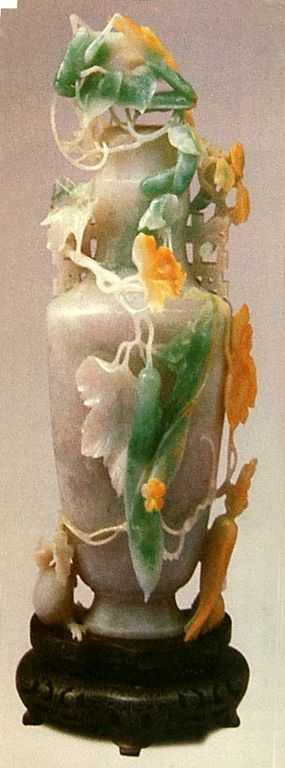图6-1-1 翡翠 三秋瓶 王仲元（1959年 北京玉器厂）设计制作
②（图6-1-2），同样是翡翠，同样是巧色，同样表现秋意，而在此以一种扁豆的果实，用满雕的形式，表现出秋的硕果累累，意境要在玉料中寻找，意境要在琢磨中深化。 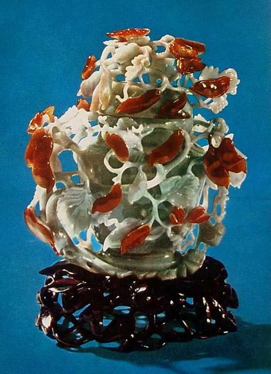图6-1-2 俏色翡翠 扁豆瓶 上海玉雕厂设计制作
3.优美的造型 瓶的造型作为天然瓶的主体以及自然物的依靠体，它的造型除了玉料的制约以外，要使它成为优美的造型。瓶作为一个相对的独立体它有很多的样式，它的美感形式有它造型的规律，在此可以借鉴瓷瓶和其它器皿的造型，总之它们的造型有三类：典雅秀美形、富态饱满形和秀骨挺拔形。 天然瓶的造型从俯视来看一般是平扁形的，它的位置摆放是相对植物体、山石体等而言，通常瓶的位置在后右侧，植物体等在左前方；另外相反，瓶的位置在后左侧，植物体等在右前方；再有或左或右一侧。 ② 虚实疏密和构图 植物等形象疏疏密密、层层叠叠布于瓶身之上，在此合理的构图，疏密的雕琢有关于天然瓶的形式美感。当我们在瓶的周围雕琢形象时，时时在思考疏密、虚实和层次，实际上是在有意识地经营着虚的空间，有了大小不同、形态各异的虚空，形成了开放、松弛流动的空间，它的作用：其一，能显现瓶的光素优雅的造型，其二，也展现了实体丰满雕琢的生动气韵。 虚和实，疏和密的处理是千变万化的，我们在设计虚体时是为了实体雕琢的部分在构图上具有趋势，具有气韵，使作品产生节奏感和韵律感。这一原理源于中国画画理，雕琢中的留空档和光素之面的表现就是国画中的留白，因此，雕琢需要“留空”和“光素”， 其实这种刻意的有目的的追求和经营，和实体具有同样的表现力，正由于虚体和实体的相互作用，才能使玉器天然瓶充满生气和活力。 ③ 形体姿态需完美 以上讲的是整体布局的大效果，接下来要进行深入的、具体的描写，除了瓶子光素、工挺、雅致的造型以外，而大部分着重表现的是植物、山石、虫鸟等。 在玉器中形象的琢磨一般是比较完整，如在素瓶旁雕琢牡丹花，那么出现的是根、茎、叶、花朵，还有根部的山石；如果是一颗柳树，同样的有山石、根部、枝杈、柳条、叶片，在此玉雕的表现是完整的、简练的、优美的。 首先是树的主干和枝杈的造型美，在此要理解树的结构和生长规律来进行提炼、概括、美化，用线描的方式勾勒造型，虽然玉器中树形不是很大，但在感觉要有气势，其中要有苍劲的、挺拔的、流畅的线感；对于叶片的描写如果观察飘落的叶片造型：它那卷曲的、翻动的姿态，随风而去的叶片可能更为生动；对于花蕾的刻画在造型上更为饱满，用线上更为柔美。在此，我们可以借鉴花鸟白描的手法，学习竹刻、砚刻的的造型方法来提升玉器天然瓶的完美造型。 天然瓶的完美造型设计，主要体现在以上几个方面，尤其是整体的疏密构图和各部的造型优美，其把握着天然瓶的整体造型趋势和局部的丰富表现（图6-1-3、6-1-4）。 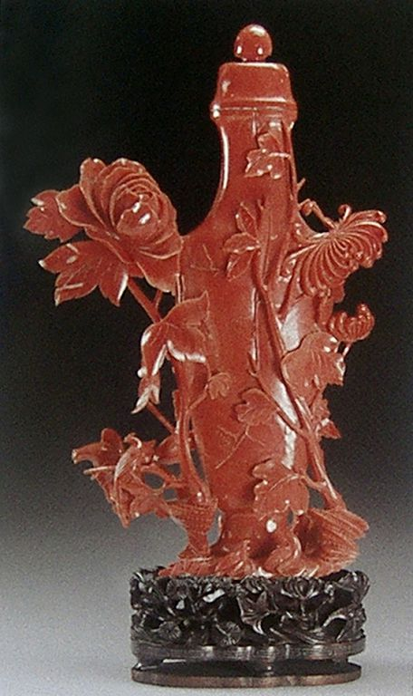图6-1-3 清代 珊瑚雕花鸟纹瓶
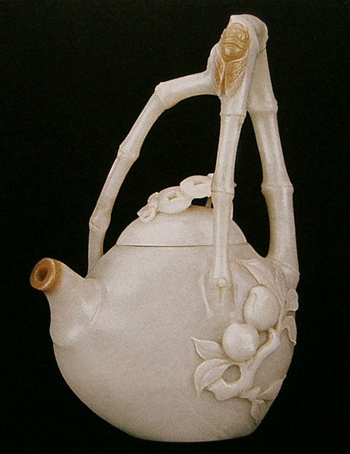图6-1-4 民国 青玉雕竹节提梁壶
二、形态质感的琢磨表现 天然瓶的工艺流程还是三个部分：块体岀坯、形体粗磨和精雕细琢。在此着重讲天然瓶植物配景的琢磨表现和理想效果。 1.有力的根须 根须象爪子一样深深的扎进石缝之间，根须勾形内侧用小扎眼工具使其深陷成为弧形，外形用小压砣使其成为弧面和块面的结合体，有的地方可以表现一、二个突出的结巴，同样是内圆外方。 2.苍劲的主干 根须上延的主干部分有着极强的表现力，用压砣、杠棒、扎眼等工具琢磨出主干的苍劲、老道，同时表现出它的转体、上升的趋势，在屈伸转势的树干体上，有压砣琢磨的弧面，有钢棒淌出的凹面，有扎眼勾出的深深开裂，还有大小的结巴，同样是内圆外方。用特有的雕琢技法充分表现出树的势态、苍劲和野趣。 3.交织的枝杈 用砂钻斜角打出枝杈的空洞，用扎眼施以推、拉、塞等方法琢磨出它们的前后排列，用压砣、杠棒琢出枝杈间大小的空间，磨出圆中有方的，转势上升的感觉。 4.灵动的叶片 叶片它是有生命的，要雕琢出它的姿态和表情，用小压砣磨出它整体的起伏，用蛋形工具淌出它灵动的翻卷，用勾砣勾出它纤细的经脉，就是在叶尖的收尾还有它细微的表情。在许多叶片的组合中，和主干、枝杈是紧密相连的，虽然叶片间有各自的姿态：顺势的、转势的、逆势的；还有强力的翻卷，优雅的飘动，然而它们是相互呼应的，共同组成一片灵动的韵味。 5.娇美的花朵 花朵是玉作观赏的重点，花朵含苞欲放的姿态正好符合玉作的特点，含苞有了浑然温润的体感，欲放表现出花瓣微张、娇美的姿态，同时有了玉的玲珑和剔透。大小的扎眼可以雕琢出花瓣的层次感，压砣可以使花瓣有了姿态，蛋形砣可以表现出花瓣边缘的细微变化，在此有了砣的琢痕，尤其是“淌”的工艺，使花朵更为柔美。 天然瓶的雕琢着重是对于自然植物的刻画和描写，使树枝苍劲有力，使叶片灵动飘逸，使花朵温润娇美（图6-2-1、图6-2-2）。 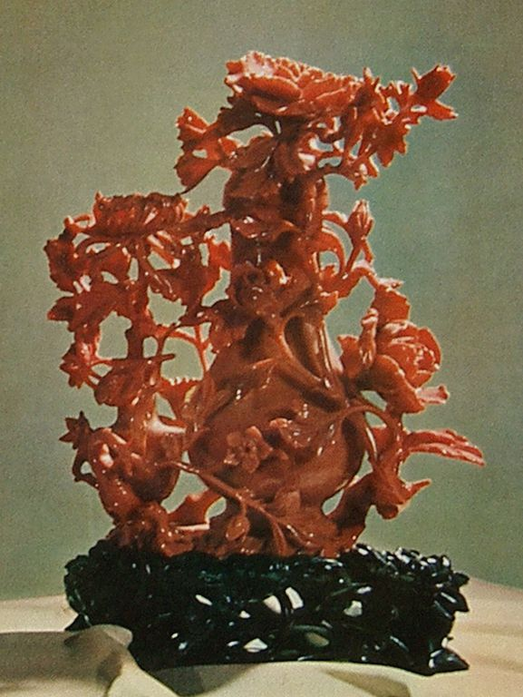图6-2-1 珊瑚 牡丹菊花瓶 上海玉雕厂设计制作
图6-2-2 白玉 花卉双管瓶 作者：李国翔
三、雕琢施艺的注意事项 在总体的工艺制作中和空间的理解上，瓶身的造型比较好掌握，而自然物的造型虽然有一定的自由度，但在空间造型上存在着错综复杂的关系，给理解带来一定的困难，也给雕琢带来一定的难度。这种对雕琢空间的理解，其一，是观看思考和勾画，努力弄懂植物的来龙去脉和内部结构。其二，是随着雕琢的渐渐深入和不断的勾画，理解也随之深入，空间结构也逐渐明朗，因此，在整体的空间雕琢中特别要注意的事项给以提示。 1.盘曲交搭要自然 在正体形象的雕琢处理中，由于玉性较脆，一般不会出现个体形象出挑、悬空，这样容易断裂，因此，天然瓶的各形象之间总是相互联系着、依靠着、交搭着。天然瓶有着复杂的结构，其中有树枝的交叉、藤蔓的盘曲、叶片的重叠等等，在此，琢磨需要思考两个问题，其一是牢度，其二是美感，因此，交搭不仅仅是牢度的需要，而且更是形式美感的需要，所以在整个作品的重叠、交搭安排一定要自然，切记，不要为了牢度而生硬的交搭。 2.穿枝过梗需开门 在琢玉中所谓的“开门”特指在雕琢结构比较复杂的形象时工具比较容易使用，可以进行深入加工，所谓的“关门” 特指在雕琢结构比较复杂的形象时工具比难以使用，工具深入比较困难，不易雕琢，因此，在设计时要有疏密变化，使疏的部分容易下工具，以至深入到密的部分，而密的部分的枝梗、叶片、花朵前后层次排列要较差，不要重叠，特别是叶片、花朵不要成正视，而要以一定的角度，约成45度，这样既美观又有空间可以下工具，总之，在密的布局中要给于下工具的“开门”空间，便于雕琢。 3.小枝要肥空斜透 雕琢细小的枝干时特别要注意不能象象牙那样雕法，过于的纤细会使玉质有枯的感觉，因此，小枝、细枝都要有肥的、饱满的感觉，这符合玉的浑然温润的质感。 4.适应变化要调整 天然瓶的造型除了瓶子以外，其它部分的造型都带有许多不确定因素：其一，从平面勾画到立体的雕琢会存在着一定的差异，需要进行合理的调整；其二，随着雕琢的深入，材料中斑点、裂痕、瑕疵等的出现需要跟进行更改、调整；其三，在雕琢中随着工具的深入、磨制，无意间会出现好的形态、砣痕，在此要随机的把握，这些变化和调整贯穿于整个天然瓶的雕琢之中，为的是天然瓶的造型更加完美（图6-3-1、图6-3-2）。  图6-3-1 芙蓉石 牡丹花瓶 上海玉雕厂设计制作 图6-3-1 芙蓉石 牡丹花瓶 上海玉雕厂设计制作 图6-3-2 翡翠 菊花瓶 设计：朱其法 制作：张建平 图6-3-2 翡翠 菊花瓶 设计：朱其法 制作：张建平天然瓶这类玉器，除了对称瓶的造型以外，同时也有植物的瓜果、叶片成为自然造型的容器，再配以植物、花鸟的组合，二者优美与和谐的组合直接影响着作品的视觉效果，因此，对于形象之间的相互搭配，在设计上要作艺术上的处理，在雕琢中要作的合理经营和安排（图6-3-3至图6-3-6）。 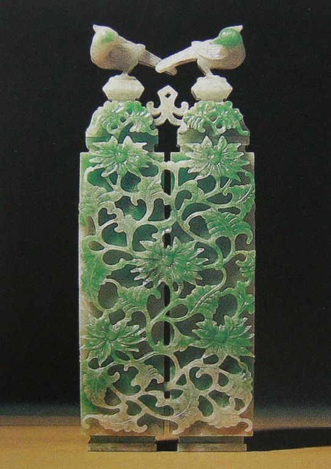图6-3-3 清代 翠玉 双连盖瓶
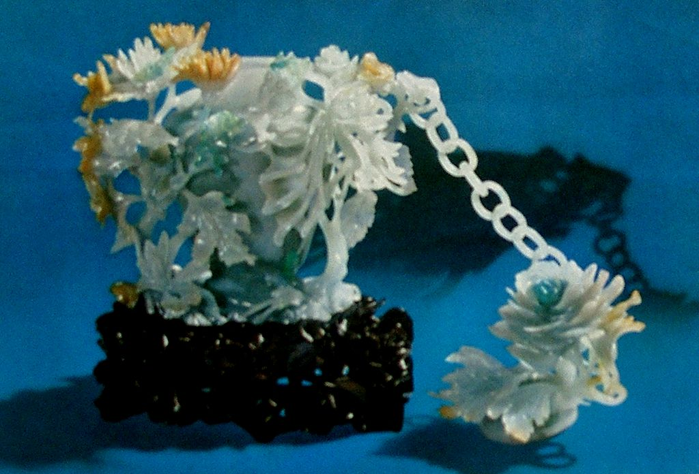图6-3-4 翡翠 链条瓶 上海玉雕厂设计制作
 图6-3-5 玛瑙 猴桃水盂 赵丕成设计制作 图6-3-5 玛瑙 猴桃水盂 赵丕成设计制作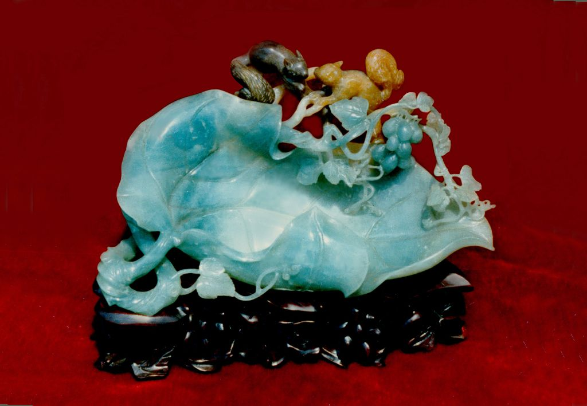图6-3-6 贵翠 松鼠葡萄笔洗 赵丕成设计制作
实训项目与思考练习： 1.设计、制作玉器天然瓶1件。 2.将“因料设计、因材施艺|的琢玉方法，合理的运用到天然瓶的设计和制作中。 3.在天然瓶的琢磨过程中，使琢玉技巧得到进一步训练和提高。
第七章 端庄玉炉精气神——三足炉玉器工艺 玉器在自身的发展过程中不断的吸收了其它的艺术形式，玉炉这一类产品大部分借鉴青铜器的造型和纹样，特别是四方鼎、三足炉、提梁卣，还有爵、觚、樽等造型渐渐出现了玉器的身影，然而这些玉器虽然没有青铜器之狞厉，然而从它的器型和纹饰上来看却有了凝重而典雅、雄健而优美，既保留了青铜器的雄浑霸气又增添了一份温润和柔美，表现了玉炉特有的精神气质。 学习目标： 1. 熟悉三足炉的造型特点 2. 掌握三足炉的设计规律 3. 掌握三足炉的工艺过程 教学要求：通过本章三足炉玉器工艺的实训课程，使学员能基本掌握三足炉的基本工艺，进一步灵活掌握不同工具的使用方法，熟练掌握圆雕、浮雕、透雕、线刻、等琢玉技巧；同时学会运用美的原理，对器型比例、浑然造型、疏密布纹、玲珑施艺等进行合理的经营和琢磨。 实践项目：三足炉设计和制作
一、三足炉的因料设计 三足炉的样式多种多样，玉三足炉的设计，包括它的样式和造型风格关键还是由玉料的造型和作者的审美来决定的。 1.玉料选取 三足炉的玉料选择，要块度大，料形整体，瑕疵少，色泽匀的玉料作为三足炉的理想材料，由于三足炉是对称、规则的器型，瑕疵不能象制作天然瓶那样容易去掉，因此，对于玉料的选择要仔细察看，是否有深度的色斑和暗裂的存在，以免在制作过程中产生不可去净瑕疵的现象，使玉炉造成美中不足的遗憾。 2.合理用料 炉身的用料应该把好的玉料放在正面和上部，炉盖和炉身最好是一块原料上分割而成，这样色泽较为统一，在开料时把好炉身和炉盖的比例，尽量用足玉料。 3.勾线定位 首先要把炉身的上口平面和三足的平面从四周来看要达到一样的高度，即成平行线，然后用画十字线的方式找出上口和底部的中心点，以此为标准，自上而下、掌握比例、勾画墨线，其中包括炉身的俯视图和底部三足的定位，两则吞头（虎头）、炉圈的定位以及各部分的勾画。  图7-1-1 清代 翡翠 活环龙首耳三足盖炉 图7-1-1 清代 翡翠 活环龙首耳三足盖炉 图7-1-2 清乾隆 白玉雕双耳三足炉 图7-1-2 清乾隆 白玉雕双耳三足炉
二、三足炉的造型特点 玉器三足炉是仿古炉瓶中典型的产品，其造型是从古代陶器、青铜器香炉演变而来，造型对称、庄重、大方、朴实。 1.三足炉的结构部件 ① 炉身：主体造型圆润饱满，有的赋有纹饰。炉身采用圆雕的形式，表面薄浮雕纹饰的雕琢俗称“了面”。 ② 吞头：似乎是炉的双肩，对称的龙头或虎头，连接着流畅、卷曲的香草，有了装饰的韵味和玲珑透雕的工艺。 ③ 炉盖：盖上装饰有狮子或盘龙，雕琢整体而通透。 ④ 三足：健壮有力的圆雕，三足鼎立，稳健中有了屹立的气势；足跟和炉身的结合处装饰有高浮雕的兽面纹，增强了玉炉的威武和神气。 ⑤ 炉圈：和吞头相连、垂挂的耳圈。有的在炉盖上也有三个炉圈，位置和三足上下对齐。炉圈给庄重的玉炉增添了一分灵动之感。 2.三足炉的整体造型 三足炉的造型基本有以上五个部分组成，各个部分的造型都有各自的特点，既有主体的几何器型，又有装饰动物、植物等形象组合而成， 而且琢磨形式又有圆雕、透雕、高浮雕、薄浮雕等，因此，在整体造型关系上有着严谨的结构和一定的比例，使多样的造型统一在整体、优雅的三足炉器型之中。 三足炉的造型形式较多，有高三足炉、矮三足炉，又有植物造型，有动物造型，有几何造型等，三足炉玉器的总体形式美感呈现出古朴、端庄、典雅的风格（图7-2-1、图7-2-2、图7-2-3）。  图7-2-1 清中期 青金石兽耳活环炉 图7-2-1 清中期 青金石兽耳活环炉 图7-2-2 清代 和阗碧玉莲纹三足炉 图7-2-2 清代 和阗碧玉莲纹三足炉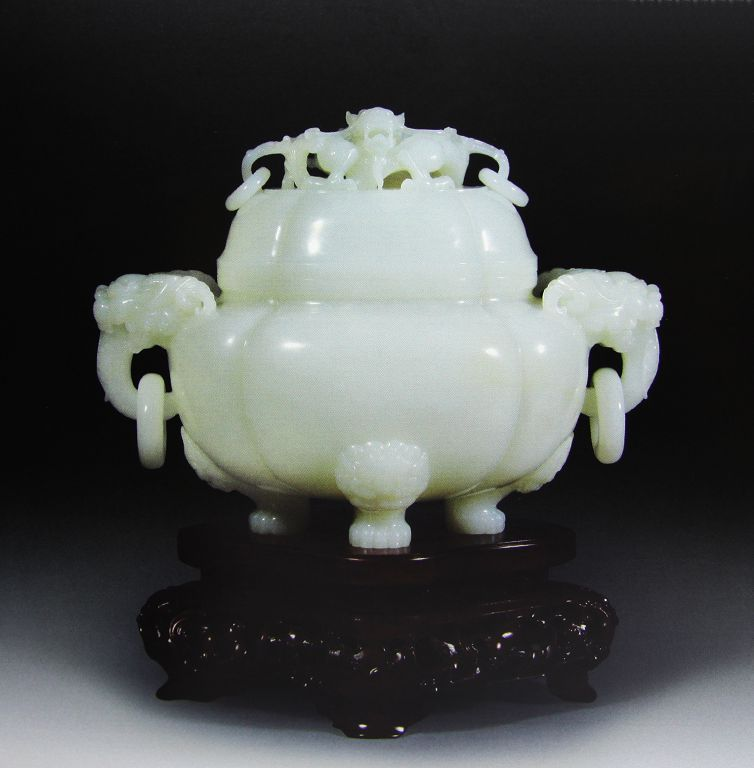图7-2-3 白玉 白玉炉（天工奖最佳工艺奖）作者：宋鸣放
三、三足炉的工艺流程 由于三足炉上的纹饰多样，结构复杂，因此，学习、雕琢三足炉可以在琢玉技巧上得到全面的训练，一方面是对前阶段的琢玉技巧进行综合的训练，另一方面也是为今后的玉器设计和制作打下了扎实的基础。 (同时参照图稿7-3-1至7-3-10)     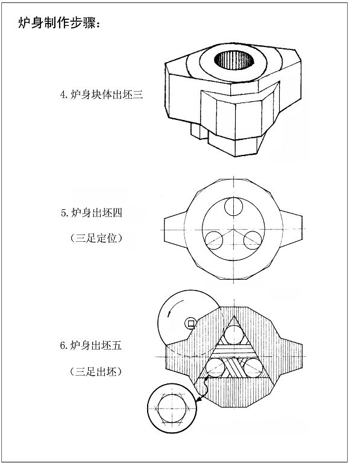
  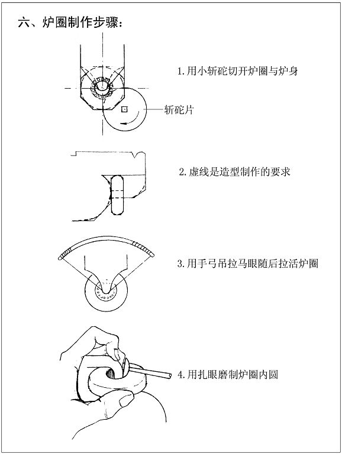
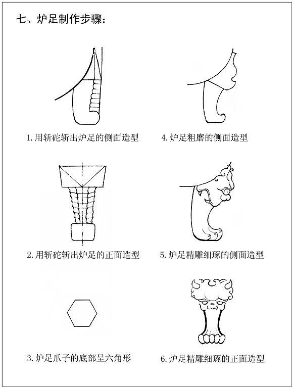
 1.块体岀坯 块体岀坯即细砂岀坯阶段：是扦砣（现代一般不使用）及斩砣的工艺，关乎于炉身、炉肩、炉圈、炉足的块体工艺程序： ① 先将炉身斩成菱形，其次斩出炉口，然后再斩出炉脚的三角形。 ② 斩出两个吞头、炉圈的高低大小。 ③ 将炉肩的菱形削圆，两边要晓得相等，吞头延伸的香草部分要少削一点。 ④ 逐一将三个脚分别斩成六角形。 ⑤ 斩出炉腹，使它成为锅底或半皮球状。 ⑥ 斩出三足的凹档。 斩砣工艺注意：每斩一个地方，先要懂得它的形状，斩时正确，既不能少，更不能多；在斩时还要考虑到斩砣是圆的，防止中间过深。 2.形体粗磨 形体粗磨即“粗砂岀坯”阶段：掏砣、冲砣、压砣、扎眼等工艺。 ① 炉身粗磨： 用粗砂（现代用新工具）把炉身外围磨的浑圆、规整，两肩对称。用粗砂掏磨炉身膛内，内壁要磨得厚薄均匀，与外部造型一致。 ② 吞头（两肩立体虎头）、炉圈粗磨： 吞头是耳，炉圈是环，二者是一体的，因此，在工艺的处理上要一起考虑。先后用大压砣、小压砣把吞头、炉圈磨平、磨圆，两边对称，再用扎眼把吞头和炉圈交界的“三角地”磨干净，然后打骑马眼，这样可以用细铅丝穿过，再两手轻轻地来回提拉，同时加以细砂和水，在拉磨的过程中，要胆大心细，渐渐的使吞头和炉圈分离（现代可以用钻石粉尖针挑磨开吞头和炉圈）。分离的炉圈是带着棱角的，再用扎眼施以扒、塞、刨等工艺，使其圆润、饱满。切记，扎眼不能比缝隙小，以免在旋转中扎眼滑入缝隙中，造成炉圈崩断。 ③ 香草粗磨： 香草作为吞头的延伸连接着炉身，同时又起着装饰作用，粗磨时使用压砣、扎眼、杠棒等工具磨出它的造型，两边要对称，既要贴切地搭在炉身上，又要有空灵感。 ④ 虎头（三面浮雕）粗磨： 虎头是连接炉身和脚的装饰物，先用大压砣大体磨出老虎头的形状，并使三只位置、大小、高低统一，再用小压砣和扎眼等工具基本琢出脑门、眼睛、鼻子、嘴造型。 ⑤ 炉足粗磨： 先用大压砣将三只足的棱角磨掉，略微弯曲，上粗下细，再用小压砣等工具琢磨出脚跟、腿凹档、脚趾等，同时三足统一有力。 ⑥ 炉盖工艺: 炉盖的造型装饰，炉盖耳朵的装饰主要有灵芝、老虎头、羊头、香草等。炉盖顶上主要有盘龙、云龙、独角龙、香草龙等。 炉盖岀坯：先用斩砣大体斩出炉盖的造型和盖顶上的龙。 炉盖粗磨：再用压砣等工具进一步磨出、磨正炉盖的造型和龙的造型。 ⑦ 炉、盖投嘴口工艺： 此项工艺犹如公榫和母榫的结构，炉身口是母榫，炉盖口是公榫。先用斩砣的斩出圆的母榫，然后用压砣把母榫磨得圆，并深浅一致，以同样的方法留有余地斩出、磨好公榫，公榫的磨制要非常小心，在磨得过程中要不断的把炉盖试着盖在炉身上，看它是否吻合，当磨到基本吻合时，可以在二者之间加上细砂，用双手使它们不断的转动、碾磨，这样可以使二者更加紧密，投嘴口的工艺要求不动摇、没有缝隙，转动紧密、顺滑。 3.精雕细琢 三足炉的精雕细琢是一项复杂和精到的工艺（了手工艺），由于形体的多变，因此，在工具的使用上是多样的，一般是从大工具用到小工具，也就是从大面积的形体琢磨到小面积的造型。 ① 炉身了手： 炉身了手在粗磨坯体的基础上进一步把圆体的炉身用细砂把它磨得周正、圆润，弧面光挺。 ② 吞头、炉圈了手： 虎吞头的了手要表现出虎头的威猛气势，两眼圆瞪，鼻子饱满，脑门宽厚，牙齿锋利有力，两耳饱满似猫耳；两个炉圈要用细砂细心的磨制以至圆润饱满，特别是琢磨炉圈的内圆更要小心，不要使工具在其内卡住，以免损坏炉圈。 ③ 香草了手： 香草弯曲富有弹性，粗细厚薄匀称一致，香草要施以“淌”的工艺，形成条形的凹弧面，使其富有流动的气韵，结尾的卷子头要从外向内旋转刨圆，并有力度；香草的三角地要用小工具琢磨干净，对于香草的边缘不能有丝毫的损伤，呈现自然、流畅、清爽之感。 ④ 虎头了面： 三面高浮雕的虎头，大小、高低位置相同，虎眼用小扎眼勾圆，磨成半球状似乎镶嵌在里面，二眼相距一个眼球为宜；眉毛根粗，眉梢略细卷成卷子头，收头要圆、略高；双耳根部用扎眼琢磨使其结构清晰，耳轮用小压砣琢磨，使耳尖稍尖，耳洞使用小蛋形工具从耳尖至耳根渐渐加深；鼻子要肥似三瓣大蒜，中间要圆而翘；口宽，龇牙咧嘴，嘴角上翘，凶相中带着笑意。 ⑤ 炉足了手： 先用大压砣将三只脚细细的磨制，使其光挺，再用杠棒圆润的琢磨腿的凹档部位，使三足微弯而挺立；用压砣等工具琢磨出有力而圆润脚跟，用快口压砣琢出脚趾内扣有力。 ⑥ 炉盖、盘龙了手： 用压砣、杠棒等工具把炉盖磨得细腻、圆润、周正。 用多样的工具细致的琢磨出盘龙：盘龙形似壁虎，尾如香草，身如游蛇；腿爪与狮子的腿爪相似；四腿动作有力生动。 炉盖上的盘龙在整体造型上呈半球状，头在正上方，身尾高低起伏的盘曲成圆状，四腿肌肉饱满，脚爪有力的均匀的蹲于四方，盘龙整体造型空灵，在镂雕的过程中，空洞的处理要合理、得当，不要出现对穿的空洞，盘龙的头、身、尾、足的搭配要自然合理，三角地的“多玉”要去净，而又不能脱节，用多种工具细致的琢出磨各局部的造型，使盘龙玲珑剔透而又稳健的蹲在炉盖之上。 三足炉在组合结构上搭配严谨，因此，在工艺处理上要求严格，整体造型要规矩、对称、稳健，比例合度。具体工艺要求：子口的紧密，炉膛的均匀，炉圈的灵活，香草的空灵，盘龙的矫健，吞头、虎头的圆雕和浮雕都必须以工见长，显示高超的琢磨技巧和完美的艺术造型（图7-3-11、图7-3-12）。  图7-3-11 和田墨碧 三足炉 作者：马庆华 图7-3-11 和田墨碧 三足炉 作者：马庆华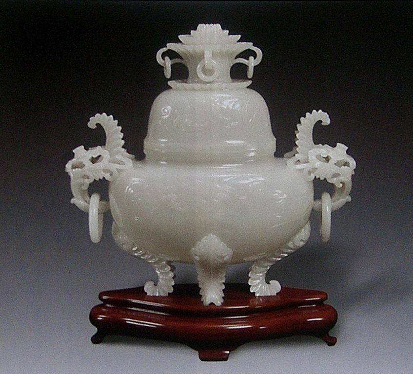图7-3-12 民国 青白玉仿痕都斯坦工双耳四足炉
玉炉除了三足炉以外还有其它各式各样的款式，造型一般来自于青铜器，有的给予了设计和创新，在造型上给人以古朴典雅、庄重精美、气韵饱满的精神气质（图7-3-13至图7-3-21）。  图7-3-13 清中期和田玉四管式炉、瓶、盒 图7-3-13 清中期和田玉四管式炉、瓶、盒 图7-3-14 翡翠 熏炉 设计：王玉 制作：韩广彬 图7-3-14 翡翠 熏炉 设计：王玉 制作：韩广彬 图7-3-15 白玉 四喜炉 设计：刘纪松 制作：沈建平 宋鸣放 图7-3-15 白玉 四喜炉 设计：刘纪松 制作：沈建平 宋鸣放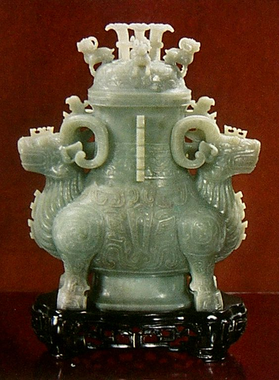图7-3-16 黄玉 双羊尊 设计：刘纪松 制作：蒋灿林 周锦 方国全
 图7-3-17 青玉 薄胎炉（天工奖银奖） 作者：蒋喜 图7-3-17 青玉 薄胎炉（天工奖银奖） 作者：蒋喜 图7-3-18 白玉 炉瓶(神工奖银奖) 设计：陈建和 制作：龚靖云 图7-3-18 白玉 炉瓶(神工奖银奖) 设计：陈建和 制作：龚靖云 图7-3-19 碧玉 羊尊(神工奖金奖) 设计：唐培林 制作：杨达秀 蒋大年 韩永年图7-3-20 碧玉 犀牛尊 设计：唐培林 制作：杨达秀 蒋大年 图7-3-19 碧玉 羊尊(神工奖金奖) 设计：唐培林 制作：杨达秀 蒋大年 韩永年图7-3-20 碧玉 犀牛尊 设计：唐培林 制作：杨达秀 蒋大年
实训项目和思考练习： 1.设计、制作玉器三足炉1件。 2.学习古代三足炉和现代三足炉以及其它器皿的造型。 3.学习古代器皿玉器的多样纹饰和合理布纹。
第八章 天工玉意自然美——山子玉器赏析 山子玉是玉器雕琢中的一种形式，它依照玉料形体，巧作山水的造型。此时的“相玉”已不仅仅是“应物象形、依势造型”，而是要深刻领悟玉意，在形、色之间去感悟玉意；在“相玉”之中去寻觅着山川、流水的踪迹；琢磨出天地之间的生命律动。通过与玉的对话、交流和体悟的过程，使心灵和玉意产生共鸣，此时，砣轮渐渐的勾画出玉意，琢磨出山子玉器的自然美意。 学习目标： 1. 了解山子玉的自然美和雕饰美 2. 熟悉多种雕刻形式的灵活运用 3. 懂得艺术经营和玉意表现 教学要求：通过本章的学习，使学员能理解天然去雕饰是玉器琢磨的最高境界，使玉意和人意达到高度的融合；学会多种雕刻形式的合理运用；认识到艺术经营能提升玉器的美感和观赏的意味。
一、自然的雕饰 山子玉的雕琢，追求着天然去雕饰的理想境界。在中国艺术史上有着两种对美的认知，既“错采镂金”之美和“芙蓉出水”之美。前者为雕饰之美，后者为自然之美。而治玉艺术正是使这两种美感自然融合,完美统一，达到“绚烂之极归于平淡”的境界，这也正是玉的性格对琢玉的要求。而山子玉器的雕琢正是琢玉者根据玉料的自然形态赋以幽山流水之想象，使自然之境融于玉料特质之中，将雕琢美和自然美得到高度、完美的统一。 1.雕琢美 琢玉的雕琢美包括两个方面：造型美和技巧美。 其一，造型美由外形和纹饰组成，图饰大部分来自于我们民族特有的吉祥意蕴和审美情趣。为了使玉器传递美好的信息，治玉运用了最简练、优雅、生动的线形，去表现玉器优美的形态和完美的纹饰，无论是形态之线还是纹饰之线的表达全在自然中流出，这是雕琢的自然，刻意的自然，经营中的自然。 其二，技巧美即雕琢之美。千百年来，玉工总结了一系列的琢玉技法，无数作品展现出作者驾驭玉材和工具的能力。运砣沉着稳健，力到工就；勾线犹如神助，高古游丝；刀法多变，有鬼斧神工之力。丰富、精妙的琢玉语言，使玉器的形式美和意蕴美得到充分展现。赏玉有“绚烂之极”之说，印证了玉器自古就提倡巧夺天工的雕琢美（图8-1-1）。 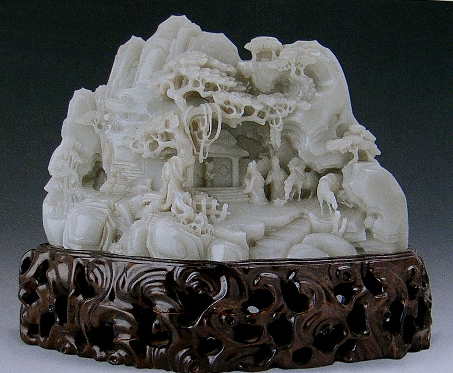图8-1-1 清乾隆 三顾茅庐山子玉
2.自然美 山子玉器的自然美的体现，还在于要遵循“忠实于天然玉质材料”的琢玉原则，因此，经过历代琢玉，形成了一整套“因料设计、因材施艺”的治玉方法和艺术特点，其中也蕴含着一个重要的美学思想，就是“要质地本身发光，才是真正的美”。 完整的山子玉经历了亿万年大自然的历练，蕴含着特有的自然美，而每一块玉料又有不同的形态、皮质、色泽等，因此，山子玉的琢磨不仅要有高超的技巧，更要有不凡的智慧，深刻领悟玉质、人意和技巧的内在联系，巧妙运用，融会贯通。在雕琢中去寻求一种和玉的温润性情、形态色泽相吻合的形式语言，在造型上无论变形或抽象、奇异和俊俏、精细和光素，都要应顺玉的本质特性，造型、图形和工艺要服从于玉料的本质特征，具有匠心的治玉就象治理土地一样，要因势利导，使人工的雕琢提升到自然的“天工”，达到雕饰美和自然美的统一（图8-1-2）。  图8-1-2 清代 白玉人物纹山子 图8-1-2 清代 白玉人物纹山子3.适形创意 ① 适天然玉质之形 在适形构思中，它的思考点是围绕玉料的自然之“形”，即玉料的性质、纹理、瑕疵、形态等因素而展开的艺术构思。 玉料由于它的品种不同，因此有着不同的特征，如质地的紧密和较松，纹理、皮色面积和深度，形态的圆润和俊俏等，这些料形的特质对于设计来说，是一种制约，而对于有创意的雕刻师来说，却把其看作是一个启示，灵感由此而来。设计要适应这些特点，顺其自然，充分显示玉质自身的优美语言和表达形式，使创意融于自然的玉质之中，塑造出天趣盎然的玉器作品，自然的流露，越增其美。因此，对于山子玉器的设计，首要任务是还是“相玉”，即对所要雕凿的玉料进行仔细地察看，反复推敲，细致琢磨，考虑周全，才能下刀，行话说“一相顶九工”就是这个道理。“相玉”的过程最能体现雕刻者的艺术水平，只有全面地深层地了解玉料，设计雕刻才能胸有成竹，得心应手，巧得佳作。 ② 创高山流水之意 山子玉顾名思义是以山水为主的题材，因此，在观察玉料的同时，它的色泽、裂痕、形状都成为启示、诱发、勾画山水的基本语言，也许是远山，也许是幽谷；似乎是红叶秋山,似乎又是晚霞牧归，这时双眼似乎能够透过玉石，寻找组合山水的元素，同时脑海也呈现出一幅幅不同的画意，以最佳的视角、最佳的意境赋予玉料之中。 ③ 意形天合自然美 山子玉器它的图案创意和造型款式，它的图形意境和玉料形质，要自然、贴切、合理的结合，呈现出天作之合的艺术效果。因此，山子玉的琢磨不仅有高超的技巧，更要有不凡的智慧，深刻领悟材料、人意和技巧的内在联系，使它们巧妙运用，融会贯通，天工雕饰（图8-1-3、图3-1-4）。  图8-1-3 和田籽玉 枫桥夜泊 正面（神工奖金奖）薛春梅设计制作 图8-1-3 和田籽玉 枫桥夜泊 正面（神工奖金奖）薛春梅设计制作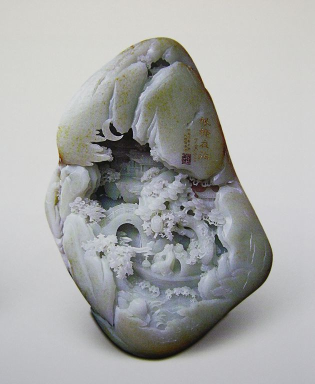图8-1-4 和田籽玉 枫桥夜泊 背面
二、多种的雕琢 在山子玉的雕琢中为了表现一定的意境，在雕刻形式上采用了多中的雕刻形式，其中有圆雕、浮雕、透雕、线刻、薄意，充分表现出不同的雕刻技法。 山子玉本身就是一个具有三维空间的立体圆雕，可以从多个方向去观赏它的造型美感，随着视点的移动，山子的形体展现出不同的画面。然而，总有一个面是最佳观赏角度，即正面。 浮雕在一般的雕刻中观赏面只有正面，而山子玉雕中它的观赏面不仅仅有主要的一面，有时是随着视点的移动而使浮雕产生转折、起伏，又引向背面，观赏极富意味。 透雕在山子玉的雕琢中不仅使形象清晰，具有玲珑剔透的效果，同时，显示出作者高超的琢玉技巧。 薄意，在山子玉中体现出细腻的砣韵和刀味，又富有诗情画意。 山子玉器中的各种雕法不能截然区别，有时圆雕中有浮雕的形式，浮雕中也有近似圆雕的表现。山子玉器琢磨往往把圆雕、浮雕、透雕、线刻、薄意融和在一起，成为独特的工艺形式（图8-2-1至图8-2-4）。  图8-2-1 清乾隆 青白玉留皮福禄寿山子摆件 图8-2-1 清乾隆 青白玉留皮福禄寿山子摆件 图8-2-2 清乾隆 青金石山水人物山子 图8-2-2 清乾隆 青金石山水人物山子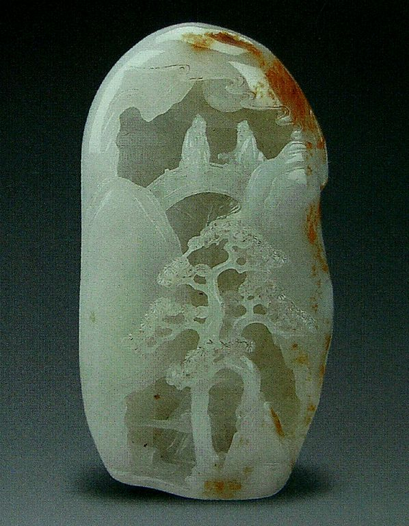图8-2-3 清乾隆 白玉抚琴图山子
 图8-2-4 翡翠 乐山（天工奖铜奖）作者：翁伟民 图8-2-4 翡翠 乐山（天工奖铜奖）作者：翁伟民三、观赏的韵味 在山子玉不大的空间之中，我们可见博大的山河之气，在此运用了艺术的对比手法来达到以小见大的艺术效果。对比法仍在艺术辩证法的范畴之中，如：动与静、张与弛、虚与实、藏与露、疏与密、曲与直、自然与雕琢等等，这些形成对立和反差，而最后去求得和谐、统一。这就是艺术的辩证法，这其实也是中国古老的阴阳对立规律在山子玉雕琢中的一大体现。 1.大小之美 在山仔玉雕中何为大，何为小，那只有再对比之中才有鉴别，大面积的山体外形保留着自然的玉质或皮质，大美不言，无需雕琢，有素面朝天的自然美；亭宇为小、人物为小、草木为小，通过细写深描，精雕细琢，展现出鬼斧神工的雕琢美，在小巧、细腻、精致的衬托下、对比下，更见玉山子的浑然博大，这正是山子玉艺术造型的特点。 2.远近之境 山子玉有丰富的层次感，在构图上有中国山水画的“平远”、“高远”、“深远”的画理，在层层叠叠的雕刻中使我们的视点游览于远近的高山流水、亭宇楼阁、云绕松柏、曲径通幽的景致之中，近景砣工浑然雕饰，中景雕琢精美绝伦，远景刻画细腻曼妙，在我们欣赏雕工的同时，似乎已回归自然，享受自然，在远近之境中，自然而然地将宇宙和心灵融为一体，顿悟有超凡脱俗之感，山子玉的魅力就在于将你引入到情景交融的意境之中。 3.动静之韵 山子玉的设计有许多将动静对比的处理融于入构思之中，如山静水动、树静鸟动、建筑静人物动等等，用动静对比来勾画一种意境。如（图8-3-1）山子玉丽人行，作者将淡黄色的玉料作横向的山体构图，既有宁静之感，又为“行” 作了意境的铺垫。从中的细心琢磨，层层刻画，作了绝妙的动静安排：山体的静，楼宇的静，仕女徐行，马蒂声声，摇曳的杨柳，飘动的流云，勾画出一片春意，使观者的思绪随着动静之韵去体悟自然，去回味玉意。  图8-3-1 黄玉 丽人行 作者：孟庆东 图8-3-1 黄玉 丽人行 作者：孟庆东4.诗情画意 诗，凝练而优美，意境深远，回味无穷。治玉同样如此，追求“画中有诗，诗中有画”的境界。尤其作为山子玉，大部分保留着天然的原形，存有一种神秘、朦胧之美，往往会引作者起无限的遐思，治玉者加以巧妙的构思和优美的描绘则更容易使山子玉富有诗情画意。 图8-3-2流水人家，山子玉的造型完全是原始的籽玉形态，仿佛大自然有意的在羊脂玉上泼洒着层层墨韵，在黑白之间，裂变之间，构画成黑瓦、白墙，晕染出暮色、月影。拉近的有苍劲柳树，推远的有羞涩芭蕉，炊烟、流云纵升横流，潺潺的流水由平远至深远，在对比的矛盾之中交织成一幅和谐的诗情画意的水墨乡情画面。 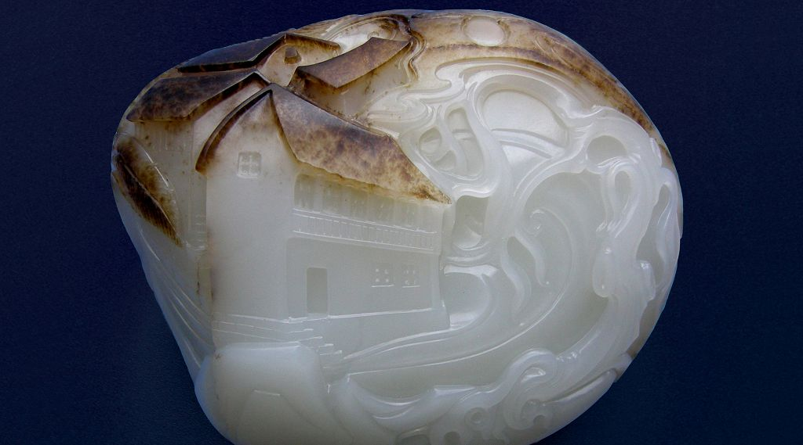图8-3-2 和田籽玉 流水人家（正面） 赵丕成设计制作
然而我们再看它的反面，景致一下拉得很近，展现的是水乡一角， “屋漏痕”沁入砖墙之间，似见水珠滴滴下坠，河面泛起层层涟漪，在这一宁静的幽景之中我们似乎能听到水的滴答之声，顿悟：简朴、清净、淡然之美，不乏有诗意的境界，有不可言传的意境美。因此，琢玉要经营，意韵更美妙（图8-3-3）。 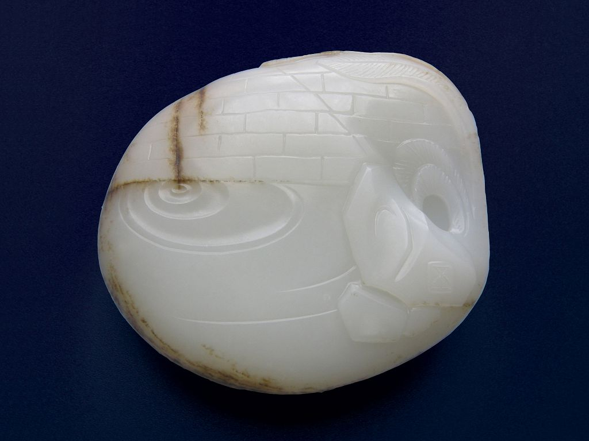图8-3-3 和田籽玉 流水人家（背面）
山子玉的设计和立意中要充分发挥玉的自然美、意蕴美，以及雕琢的形式美的技巧美，使山子玉的创意和雕琢自然地进入玉质的画意之中，（图8-3-4玉料）料体不大，但在形态和色彩之间感到了自然天地的美妙，似乎看到了一条五彩祥云的神奇天路，又似乎看到了花雨飘洒的丝绸古道，在小小的玉料之中想象是漫无边际的，丰富多彩的，在砣轮渐渐的探索下，琢磨出舞动的飞天，古拙的石窟，金色的沙漠，飘绕的流云，形成了敦煌逸影的山子玉作（图8-3-5）。  图8-3-4和田籽玉 敦煌逸影原料 图8-3-4和田籽玉 敦煌逸影原料 图8-3-5 和田籽玉 敦煌逸影（正面） 赵丕成设计制作 图8-3-5 和田籽玉 敦煌逸影（正面） 赵丕成设计制作然而它的背面大面积的保留着籽玉撒金皮的皮质，犹如升腾的金色佛光，化作一片祥云，又映衬着一朵洁白的玉莲，在简洁的形式中给观者一个宁静和想象的空间……（图8-3-6）  图8-3-6 和田籽玉 敦煌逸影（背面） 图8-3-6 和田籽玉 敦煌逸影（背面）在典型的山子玉中往往借自然的玉料造型化作成山岳的造型，再雕饰于流水、亭宇、花木、鸟兽、人物等，借自然之物抒发心情，把“玉意”转化成立体的画意，凝固的诗情，使赏者见之心灵波动，玩之可思可感，思之回味无穷（图8-3-7、图8-3-8）。  图8-3-5 和田籽玉 敦煌逸影（正面） 赵丕成设计制作 图8-3-5 和田籽玉 敦煌逸影（正面） 赵丕成设计制作 图8-3-7 红玉 火焰山 张敏设计制作 图8-3-7 红玉 火焰山 张敏设计制作
课外练习与思考： 1.说说不同的雕琢技法在山子玉器中的合理运用。 2.试一试将美的形式规律运用到其它玉器的设计之中去。
历代玉器记刻着时代的变迁。然而，现代玉器同样以她特有的形式美感透射出时代的气息，我们通过欣赏大师、名家优秀的玉器作品，去感受当今玉器特有的温润美，技巧美和创意美。 学习目标： 1. 学习大师、名家精妙的琢玉技巧 2. 感受优秀玉器作品的艺术经营和个性创造意 3. 领悟大师、名家玉器的形式美感和温润玉意 教学要求：通过本章的学习，使学员能理解优秀的玉器作品不仅需要高超的琢玉技艺，更需要独创的艺术构思，个性的琢玉手法，自然的表现玉意。
一、现代玉器的丰厚底蕴 现代玉器从1949年新中国建立以后，发展至今已有半个多世纪，其间也有潮起潮落。而今，随着经济的繁荣发展，人们的精神文化需求高涨，赏玉、藏玉者日益增多，好玉之风日益盛行，为玉器的琢磨、发展提供了一个良好的经济基础和文化氛围。 在20世纪50年代至70年代末，老一辈琢玉艺术家为中国玉器事业的复兴和发展做出了卓越的贡献，在机器设备上，不断改进；在玉器品种上，俱全门类；在用料设计上，完善了传统的用料设计法则，并树立精心创造的创作思想，同时留下了许多优秀的玉器作品，为现代玉雕的发展淀结了丰厚的底蕴（图9-1至图9-10）。  图9-1珊瑚 六臂佛锁蛟龙 潘秉衡（20世纪50年代末 北京市工艺美术研究所）设计制作 图9-1珊瑚 六臂佛锁蛟龙 潘秉衡（20世纪50年代末 北京市工艺美术研究所）设计制作 图9-2玛瑙雏鸡 潘淑艾（20世纪60年代 北京市玉器厂）设计制作 图9-2玛瑙雏鸡 潘淑艾（20世纪60年代 北京市玉器厂）设计制作 图9-3珊瑚 鼓上飞燕 李博生（20世纪70年代 北京市玉器厂）设计制作 图9-3珊瑚 鼓上飞燕 李博生（20世纪70年代 北京市玉器厂）设计制作 图9-4玛瑙虾盘 王仲元、杜瑞静（20世纪70年代北京市玉器厂）设计制作 图9-4玛瑙虾盘 王仲元、杜瑞静（20世纪70年代北京市玉器厂）设计制作 图9-5玛瑙 俏色五鹅 （1974年 北京市玉器厂）设计：王树森 制作：黄宝瑞 图9-5玛瑙 俏色五鹅 （1974年 北京市玉器厂）设计：王树森 制作：黄宝瑞 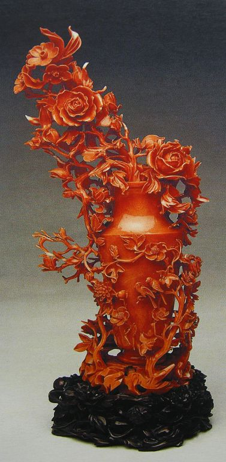图9-6 珊瑚 梅花插瓶 设计：关盛春 制作：黄德荣
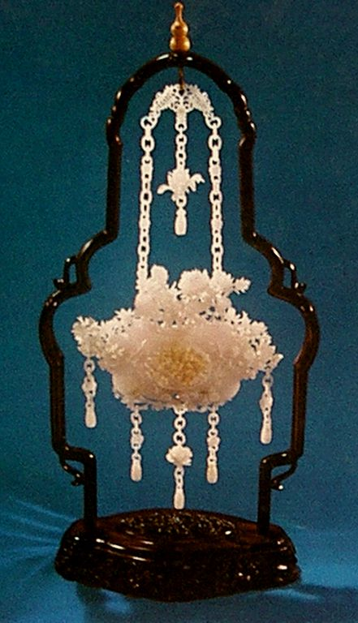图9-7 紫花翡翠 万紫千红链条瓶 上海玉雕厂设计制作
 图9-8 翡翠 飞熊杯 设计：刘纪松 制作：冯根龙 李荣伟 图9-8 翡翠 飞熊杯 设计：刘纪松 制作：冯根龙 李荣伟 图9-9 岫岩玉 嫦娥舒广袖 设计：肖海春 王恒书 制作：王恒书 韦恩福 图9-9 岫岩玉 嫦娥舒广袖 设计：肖海春 王恒书 制作：王恒书 韦恩福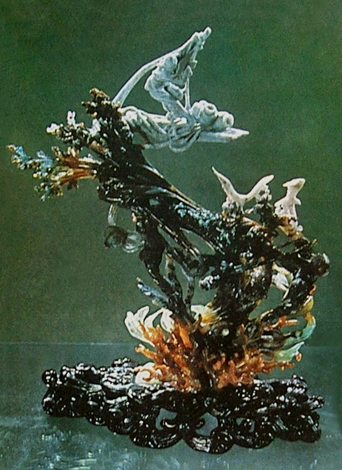图59-10 岫岩玉 南海明珠 设计：朱宁芳 黄 忄隽 肖海春 制作：黄 忄隽
二、现代玉器的个性风采 在好玉之风盛行的今天，孕育着一大批大师、名家和琢玉高手，他们在与玉的交流过程中渐渐对玉产生了感悟，琢玉有了新气息、新思路、新款式，并将传统的玉文化融入现代的生活，又将现代的审美意识渗透到琢玉的创意之中，从而将“新玉”去润养现代人的心灵，去延续玉的文脉。 图9-11 白玉 母子情牌，是玉牌中之极品，在大师娴熟精炼的刀法下，雕琢出一片母子情深，刻画出一幅优雅景致，玉牌构图疏密有致，从前景的人物、葡萄架渐渐延伸到远景的长廊和亭台，这全在方寸之间和极薄的浮雕之中表现立体的空间感、层次感，充分展现出大师精妙的琢玉技巧和中西合璧的绘画功底。  图9-11 白玉 母子情牌（天工奖金奖）作者：刘忠荣 图9-11 白玉 母子情牌（天工奖金奖）作者：刘忠荣图9-12 白玉 普陀洛迦观音，作品构图饱满，动静相宜。在依势造型中原石构成了普陀洛迦山，山似佛，佛似山，潮起潮落的海水拍打着山体，轻抚着佛衣。而精妙之处在于观音和山体融为一体，又从山间显出，分和得体。观音的造像小步徐行，侧身回眸，以略微扭动身躯和略斜头部，构成了优美的曲线，静态中有微动之势，犹如飘逸升騰的青烟，既含蓄端庄，又灵动优雅。从她眼睛微闭，静观自在，慈祥的微笑中还带有一丝神秘之感。尤其在衣纹的处理上既有“曹衣出水”之风又有“吴带当风”之韵，充分体现了大师深厚的艺术底蕴和琢玉水平。  图9-12 白玉 普陀洛迦观音（天工奖金奖）作者：于泾 图9-12 白玉 普陀洛迦观音（天工奖金奖）作者：于泾图9-13 白玉 玉骨含香，在玉牌中出现了弧面、流线，不仅使玉牌形制有了张力，并且又增添了一份秀美和温润，充分表现出玉质的美感；玉牌和书画的融合，使玉器雕琢有了书卷之气和诗情画意。大师以刀代笔，勾画出飘逸流畅的水仙，苍劲挺秀的梅花，一股清香之气融化在冰肌玉骨之中；在玉牌的反面琢有劲道、饱满而自然的阴刻诗文，可见刀迹的游动和书法随之而出。小小玉牌不仅显示出着大师自然、娴熟、精妙的琢磨技巧，而且蕴含着深厚的书法功力和艺术底蕴。  图9-13 白玉 玉骨含香（天工奖金奖）作者：易少勇 图9-13 白玉 玉骨含香（天工奖金奖）作者：易少勇 图9-14 白玉 松竹梅宜子孙玉牌 作者：易少勇 图9-14 白玉 松竹梅宜子孙玉牌 作者：易少勇图9-15 和田墨玉 清河露玉，作品在大师的手笔下我们似乎看到了一条喀拉喀什墨玉河。墨玉已回归到最本源的状态，在皎洁的月光下，潺潺的流水，斑驳的卵石，空间由远而近，玉女倩影简洁而丰满，作品使我们的视感和思绪完全进入了大自然的美好意境之中。独具匠心的雕琢使墨玉变得如此质朴而绚烂。  图9-15 和田墨玉 清河露玉 作者：吴德昇 图9-15 和田墨玉 清河露玉 作者：吴德昇现代琢玉不仅仅是表现一种手艺，更是渗透着民族的文化，洋溢着大师、名家各自的风采，从中蕴含着作者对玉的理解，以及琢玉的心境和意趣（图9-16至图9-30）。 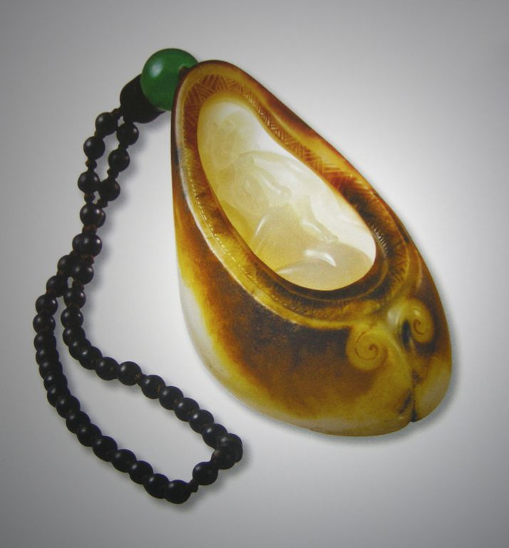图9-16 和田籽玉 金莲 作者：吴德昇
 图9-17 白玉 倩影（天工奖金奖）作者：翟念伟 图9-17 白玉 倩影（天工奖金奖）作者：翟念伟 图9-18 白玉 云霞异彩（天工奖铜奖） 作者：翟念伟 图9-18 白玉 云霞异彩（天工奖铜奖） 作者：翟念伟 图9-19 珊瑚 丝路花雨（神工奖最佳创意奖） 宋丗义设计制作 图9-19 珊瑚 丝路花雨（神工奖最佳创意奖） 宋丗义设计制作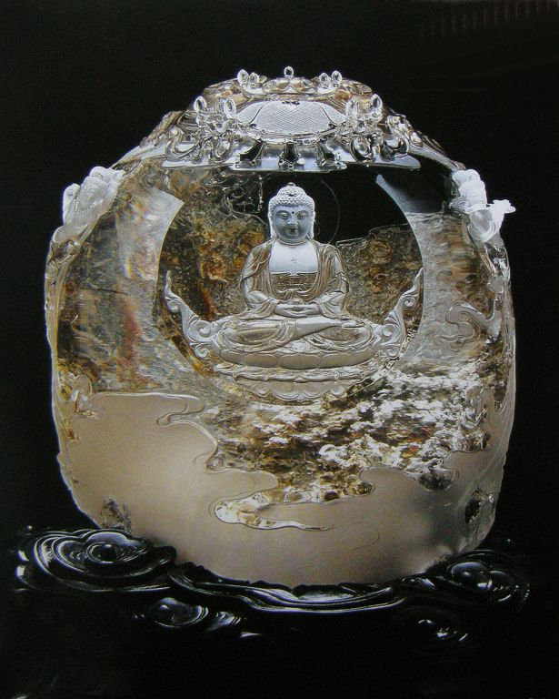图9-20 水晶 极乐图 （“天工杯”金奖）作者：仵应汶
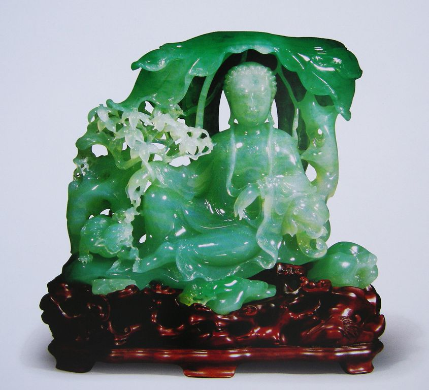图9-21 翡翠 菩提佛祖（天工奖金奖）作者：颜桂明
 图9-22 白玉 戏鹦图 作者：孟庆东 图9-22 白玉 戏鹦图 作者：孟庆东 图9-23 白玉 杨贵妃（天工奖金奖）作者：王平 图9-23 白玉 杨贵妃（天工奖金奖）作者：王平 图9-24 绿牡丹系列 玉手镯、玉挂件、玉戒指 作者：杨曦 图9-24 绿牡丹系列 玉手镯、玉挂件、玉戒指 作者：杨曦 图9-25 白玉 龙腾盛世（神工奖铜奖）雅园设计制作 图9-25 白玉 龙腾盛世（神工奖铜奖）雅园设计制作 图9-26 白玉巧雕 路路得利 作者：洪新华 图9-26 白玉巧雕 路路得利 作者：洪新华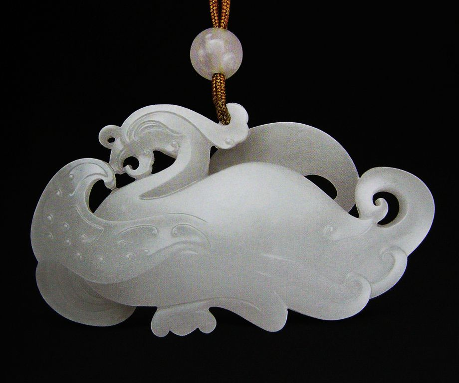图9-27 白玉 有凤来仪（神工奖最佳工艺奖）卢开飞设计制作
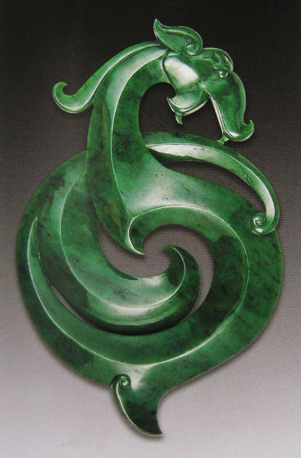图9-28 加拿大碧玉 枭龙 作者：张森才
 图9-29 白玉 三足炉 （天工奖金奖）作者：马庆华 图9-29 白玉 三足炉 （天工奖金奖）作者：马庆华 图9-30 白玉 三足炉（天工奖优秀作品奖）作者：王金高 图9-30 白玉 三足炉（天工奖优秀作品奖）作者：王金高图9-31 碧玉 发发如意卣，这是一件冠冕堂皇、别具新意的玉石雕刻稀世珍品。细数卣体上的玉环竟有88个之多， 88，发发也。发展！发达！发财！此珍品寄托着人生美好的愿望，遍布卣体的如意纹则象征着自由驾驭人生的心念，实现生命完全自由解放的理想。当打开卣体天冠时，你会惊奇的发现卣盖内竟然还有一个玉环，88添1，“天意”化作“天久”，发之久远也！ 这件玉作不仅在制作技艺上令人叹为观止，而且在设计创意上独具匠心，巧妙经营，因此，我们看大师、名家的作品，不仅要看他们高超的琢玉技巧和完美的造型，而且更要看他们各自独创的琢玉风格，其中包括题材、造型、技巧等方面的创新。让我们细细品味大师、名家精彩的玉器新作，这将对我们以后的玉器设计和制作有着有益的启示。 图9-31 碧玉 发发如意卣 设计：唐培林 制作：韩永年 郭红欣 蒋大年当我们反复阅读了大师、名家的作品时，有了深切的体会：玉的艺术是心的艺术，我们要用心去领悟玉意，用心去创造新意，用心去表现技艺，在这辛劳而愉悦的琢玉过程中，努力把这一如此美妙的艺术，得以继承、发展和创新。
后 记 在这一年多里我阅览于古代玉器和现代玉器的书籍之中，我传授于玉器工艺的教学之中，我琢磨于“敦煌逸影”的玉器制作之中。今天，《玉器工艺》书稿终于完成，教学亦有良好的效果，我的玉作也即将完工。这三个过程从教材编写来说是一个整体，在古代和现代玉器的书籍中使我深深感到玉文化的博大精深，从中玉器的资料和玉器美学的理论为我笔耕《玉器工艺》教材有了底气；在玉器工艺教学中，学员那执着、稚嫩的雕琢有了新的气息，闪烁着创意的灵光，给我以教学的动力；自我的玉器设计和制作是琢玉经验的积累，每当一件件玉器琢磨而成，心底的愉悦油然而生，不免也有一些体会，因此，记下了不少的杂记和玉器画稿，这些都是《玉器工艺》书稿的支撑材料。 本书编写的过程又是一个很好的学习过程，我阅览了有关玉器书籍20余本，在此向这些作者深表敬意和感谢!我运用了300多张精彩的玉器佳作图片，在此向玉器行业的前辈、大师、名家、同仁、好友深表谢意！接着要感谢黄保余老师提供了有关玉器资料和图稿，另外特别要感谢我的同学唐培林为本教材提供了珍贵图片和资料，还要感谢我院对此书编写有过帮助的老师。 本书中对历代玉器的认识、对玉质温润之美的理解、对玉器的设计和制作谈了自己的体会，皆属一管之见，但愿不至于贻笑大方。由于本人学识肤浅，书中肯定还存在着不足之处甚至些许谬误，还望行业专家、前辈和广大读者指正。 赵丕成 2010-8-20
参考文献 1.中国玉器全集编辑委员会编.中国美术分类全集.中国玉器全集. 石家庄: 河北美术出版社.1993年 |